2025-9-9
Eser Aygün¹’* Anastasiya Belyaeva²’* Gheorghe Comanici¹’* Marc Coram²’* Hao Cui²’* Jake Garrison³’*,
Renee Johnston²’* Anton Kast²’* Cory Y. McLean²’* Peter Norgaard²’* Zahra Shamsi²’* David Smalling¹’*,
James Thompson²’* Subhashini Venugopalan²’* Brian P. Williams²’* Chujun He²’⁴’** Sarah Martinson²’⁵’**,
Martyna Plomecka²’⁶’** Lai Wei² Yuchen Zhou² Qian-Ze Zhu²’⁵’** Matthew Abraham² Erica Brand² Anna
Bulanova¹ Jeffrey A. Cardille²’⁷ Chris Co² Scott Ellsworth² Grace Joseph² Malcolm Kane² Ryan
Krueger²’⁵’** Johan Kartiwa² Dan Liebling² Jan-Matthis Lueckmann² Paul Raccuglia² Xuefei (Julie)
Wang²’⁸’** Katherine Chou² James Manyika² Yossi Matias² John C. Platt² Lizzie Dorfman¹’‡ Shibl Mourad²
and Michael P. Brenner²’⁵’‡
¹Google DeepMind, ²Google Research, ³Google Platforms and Devices, ⁴Massachusetts Institute of Technology, ⁵School of Engineering and Applied Sciences, Harvard University, ⁶Google Cloud, ⁷Faculty of Agricultural and Environmental Sciences, McGill University, ⁸California Institute of Technology
科学发现的循环经常受到缓慢、人工创建支持计算实验软件的瓶颈限制。为了解决这个问题，我们提出了一个AI系统，它能创建专家级的科学软件，目标是最大化质量指标。该系统使用大语言模型(LLM)和树搜索(Tree Search, TS)来系统性地改进质量指标，并智能地导航可能解决方案的巨大空间。当系统探索并整合来自外部来源的复杂研究想法时，它能实现专家级的结果。树搜索的有效性在广泛的基准测试中得到了证明。在生物信息学中，它发现了40种新颖的单细胞数据分析方法，在公共排行榜上超越了顶尖的人类开发方法。在流行病学中，它生成了14个模型，在预测COVID-19住院人数方面超越了CDC集成模型和所有其他单个模型。我们的方法还为地理空间分析、斑马鱼神经活动预测、时间序列预测和积分数值解产生了最先进的软件。通过设计和实施针对不同任务的新颖解决方案，该系统代表了加速科学进步的重要一步。
关键词：树搜索、生成式AI、可评分科学任务、经验软件
科学家需要多样化的信息来推进他们的科学议程。有些是简单的问题，搜索引擎可以提供表面的答案。然而，进行计算实验通常需要更深入的信息。例如，作者之一的研究涉及森林砍伐分析，使用全球空间分辨率测量数据评估过去和现在的土地覆盖变化。这是通过基于卫星的森林砍伐检测器来实现的，该检测器是用代码构建的，用于回答科学问题。森林砍伐检测器是科学中成千上万个经验软件例子中的一个。我们使用”经验软件”这个术语来指代那些旨在最大化可定义或可测量质量分数的软件，通常是对现有观察的拟合。如果一个任务可以用经验软件解决，我们称其为可评分任务。
我们对科学中的可评分任务和经验软件有两个假设。首先，可评分任务在科学中无处不在。几乎科学、应用数学和工程学的每个子领域现在都依赖软件。根据作者们的综合经验，我们发现这些软件中的大部分都是解决可评分任务的经验软件。这种经验软件通常是科学家工作的核心。经验软件最近促成了多项化学诺贝尔奖：1998年的密度泛函理论、2013年的分子动力学模拟和2024年的蛋白质结构预测。经验软件是我们创建复杂系统模型能力的基础，范围从用于天气建模的地球大气垂直柱参数化，到湍流中应力响应的参数化，再到社会系统的预测。
其次，科学的经验软件创建缓慢且困难。特定领域的经验软件需要繁琐的工作，通常需要多年时间。当经验软件用于测试复杂假设时，完全从第一原理编写变得更加困难。通常没有系统性地搜索替代方法。设计选择经常由直觉或
*等同贡献，按字母顺序排列。 **作为Google Research学生研究员身份进行的工作。 ‡通讯作者：shibl@google.com, mbrenner@google.com
为方便起见，而不是详尽的实验。创建软件非常耗时，这严重限制了可以有效探索的可能性。
本文介绍了一个基于AI的系统，它系统性和自动化地创建实证软件来解决可评分任务。我们的方法基于一个LLM，它重写软件以尝试提高其质量分数。该系统创建多个软件候选解决方案，并使用树搜索来决定哪些候选方案值得进一步探索（图1a）。虽然有许多设计代码变异系统的方法，但我们通过设计和参与基础Kaggle竞赛基准（图1b）来开发和完善该方法，如下所述。我们用研究想法来增强代码变异，这些想法来自于从高引用论文到专业教科书，再到搜索引擎结果的各种来源（图1c）。实际上，这些想法可以由用户直接注入，或者使用搜索引擎自动访问文献中的研究。LLM使用这种注入的指导来编写代码。
我们发现我们的方法可以应用于科学界的各种可评分任务，产生的软件优于科学家产生的最先进水平。这种超人类表现源于能够以前所未有的规模详尽而不知疲倦地进行解决方案搜索，识别大海捞针式的高质量解决方案。
我们在Kaggle游乐场竞赛基准上开发我们的方法，并通过选择基于科学或工程问题的可评分任务来测试它。我们使用两个标准选择这些问题：首先，我们选择最近进展缓慢但对一群科学家很重要的任务；其次，我们选择对至少一位合作作者的科学议程有用的任务。这些可评分任务列举如下。
单细胞RNA测序批次整合：通过去除混杂因素，我们可以实现大规模多实验室转录组数据整合，如人类细胞图谱。这是一个困难的问题，因为它需要在高维稀疏数据集中区分微妙的生物信号与噪声。
CDC COVID预测：通过提前几周预测COVID病例，我们可以为公共卫生政策和资源配置提供信息。这项任务的挑战在于从滞后和有噪声的实时数据中预测非线性疾病动态。
DLRSD分割：这是一个在复杂卫星图像上执行密集像素级多标签语义分割的问题。解决这个问题可以在环境监测和灾害响应方面带来重大改进。
ZAPBench：此基准要求建模和预测>70,000个神经元的活动
a 候选代码解决方案树
可评分问题
提示 改进 LLM
研究想法 代码沙箱 完成 进一步探索
b c 专家
编写
科学论文
总结
先前想法
重新组合
Gemini
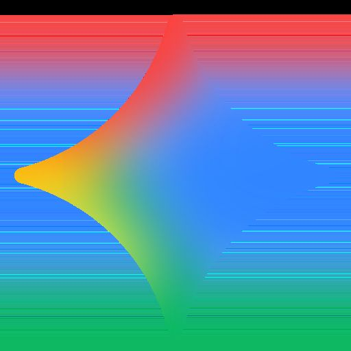
深度研究
图1 | 我们方法的示意图和性能。a，我们方法算法的示意图。一个可评分任务，连同提出解决任务方法的研究想法，被输入到LLM中，LLM产生代码在沙箱中评估可评分任务。然后将其嵌入到树搜索算法中，通过平衡开发和探索来选择新节点，从LLM中采样（方法）。b，代码生成方法在Kaggle游乐场基准上的性能。结果报告了16个任务的平均公共排行榜百分位性能。基于我们方法的方法以粗体列出。错误条表示标准差。BDT，提升决策树。c，用于创建解决科学问题的初始研究想法的机制。
跨越整个脊椎动物大脑。在此基准上表现良好可能导致对大脑功能和行为的系统级理解。
GIFT-Eval时间序列：准确的时间序列预测对气候学和医疗保健很有用。通用时间序列预测非常困难，因为输入特征语义和预测时间尺度多样。一个更困难和有用的问题是零样本预测，其中只给出单个时间序列并必须进行预测。
数值求解困难积分：求解标准数值算法无法解决的积分对建模物理和工程系统很有用。
我们设计了代码变异系统在精选的Kaggle竞赛集合中获得高分。Kaggle通过排行榜上的百分位排名校准人类性能，我们通过直接向Kaggle提交来评分代码。我们的基准由2023赛季的16个游乐场竞赛组成，包含回归和分类任务。游乐场竞赛是理想的基准，因为它们提供快速迭代、简单性和与数千名人类的校准。
获得高分需要创建复杂的代码，而无需解决复杂的科学任务。
我们的基本策略使用简单的提示模板（补充表[1]），将竞赛描述与之前的试验串联起来。图[1b]评估了我们方法的性能，使用了所有16个playground竞赛的平均公开百分位排名：TS大幅超越了单次LLM调用和1000次LLM调用的最佳结果。在搜索过程中，智能体发现了导致分数突然跳跃的策略，这些跳跃的累积最终产生了最高质量的解决方案。
在提示中添加针对特定问题的建议大幅提升了性能。我们用两个例子来说明这一点。在带有专家建议的TS中，我们给模型提供了赢得Kaggle竞赛的标准建议（补充表[2]）。在带有提升决策树(BDT)的TS中，我们告诉模型从零开始实现一个提升决策树库，不使用标准包（补充表[3]）。我们在两种情况下都手动验证了生成的代码遵循了建议。
我们现在描述在不同科学领域的六个基准测试系列上评估我们方法的结果，探索了结合研究思想来改善系统性能的不同方式（图[1c]，方法）。
我们首先考虑来自单细胞RNA测序(scRNA-seq)的数据分析，这项技术彻底改变了我们解析细胞异质性、发现新细胞类型、推断基因调控网络和发育轨迹，以及改进治疗靶点优先级排序的能力[25]，使得数以亿计的细胞能够在数千个数据集中被单独测序[20][26][-][28]。联合分析许多不同数据集所需的一个主要挑战是计算性地去除样本间存在的复杂批次效应，同时保持生物信号[29]。目前存在近300种工具来执行scRNA-seq数据的批次整合[30]，并且已经开发了多个基准来评估批次效应去除和生物变异性保存的指标[31][-][34]。
为了评估树搜索在此任务上的性能，我们使用了OpenProblems v2.0.0批次整合基准[34]。截至2025年7月，这个活跃的基准在13个不同指标上评估了15种最先进的方法和8种对照方法，这些指标量化了去除数据中批次效应和保留归因于真实生物差异的变异性的能力，涵盖了六个CELLxGENE数据集，包括人类和小鼠[27]（图[2a]）。为了避免对基准过拟合，我们使用了来自CELLxGENE的单独数据集进行我们方法的爬山搜索（方法，补充图[1]）。对于每次树搜索运行，我们基于在这个训练集上的性能选择最佳解决方案，并报告在保留的OpenProblems数据集上的性能，这些数据集总共包含1,747,937个细胞。我们向LLM提供单细胞批次整合问题的描述、读取数据集的代码、评估指标的代码，以及包含特定研究思想的可选文本。
首先，我们在没有指导的情况下运行树搜索，观察到其解决方案在概念上类似于ComBat[37]，但改进了当前OpenProblems排行榜（图[2b]中的无建议(TS)）。
然后我们评估了我们的方法是否能改进现有算法。我们从OpenProblems基准中选择了九种方法，包括六种性能最高的方法（方法）。对于每种方法，我们获得了论文PDF，并使用Gemini 2.5 Pro在提示中添加简要摘要（方法）。在成对比较中，我们的方法在总体得分上超越了九种方法中八种的相应已发表结果（图[2b]，补充表[4]）。
性能最佳的方法是我们基于批次平衡K近邻([38] BBKNN (TS))的树搜索实现，与最佳已发表方法([37] ComBat)相比总体改进了14%，并且在每个数据集和13个指标中的11个上等于或超越了相应的已发表BBKNN（图[2b]）。这种性能突出了其在不损害生物信号的情况下有效去除批次效应的能力（补充图[2]）。我们注意到树搜索还能够为没有公开可用代码的算法产生高性能实现（TabVI[39]，补充图[3]）。重要的是，专家对我们方法提出的代码解决方案的手动检查证实，几乎所有实现都遵循了所请求的算法（补充表[5]），性能在方法的重复运行中基本一致（补充图[3]）。此外，即使与具有优化超参数的基础方法相比，树搜索也显示出改进，表明其贡献超出了超参数调优（方法，补充图[4]）。补充图[5]显示了代表性示例的树结构和突破图（显示最大分数随树中节点数量的演化）。
对于表现最佳的模型BBKNN (TS)，部分性能提升来自于结合两种现有方法ComBat[37]和BBKNN，而不是简单地实现BBKNN（图[2c]）。特别是，原始BBKNN方法在PCA嵌入上计算邻居，而BBKNN (TS)
在ComBat校正的PCA嵌入上计算邻居，去除全局线性批次相关的
方差。然后两种实现都计算跨批次的[𝑘]近邻并构建
图（在具体实现上有差异），从而去除局部批次效应。手动
修改BBKNN (TS)和已发布的BBKNN实现证实，添加
ComBat校正的PCA嵌入对于改进两种实现都至关重要（补充
图[6]），确认了思想重组的价值。
这激发了对系统性生成更复杂研究思想方法的探索。
首先，类似于科学家经常结合思想来创造新颖方法，我们以程序化的方式
生成了上述11种方法所有成对组合的55种”重组”（无建议、九种
复制和TabVI；以下简称：“基础方法”），基于每种方法
代码的摘要（方法，补充表[6]）。我们运行树搜索，以这些”重组”中的每一个
为提示，评估它是否能通过结合现有方法的优势来开发新方法。
对于每个基础方法和”重组”组，我们比较了所有三种方法成功计算的
指标交集上顶部节点的平均得分。令人惊讶的是，
树搜索的重组实现经常优于其基础对应方法，其中
55种”重组”解决方案中有24种（44%）优于其两种基础方法，剩余
31种”重组”解决方案中有22种优于两种基础方法中的一种（补充
a b
组合
✗ 差 好 ✓
PC2 PC2
PC1 PC1
c
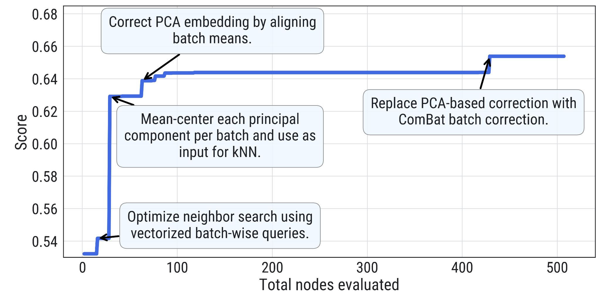
总体得分 每个数据集得分（指标均值） 每个指标得分（数据集均值）
0 0.5 1 0 0.4 0.6 0.8 1 0 0.4 0.6 0.8 1
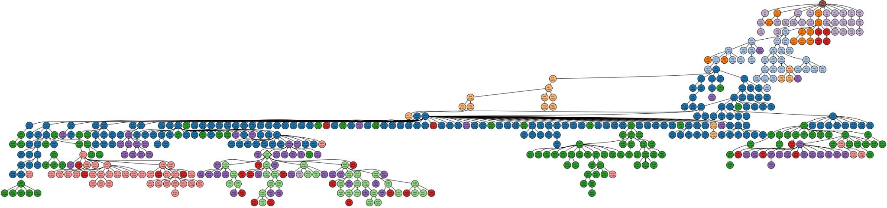
d
图2 | 树搜索在scRNA-seq批次整合上的性能。a，批次

整合任务示意图，其中不同的数据集（青色和红色）被处理以去除数据中的批次效应

同时保留生物变异性。b，树搜索（方法名称加粗
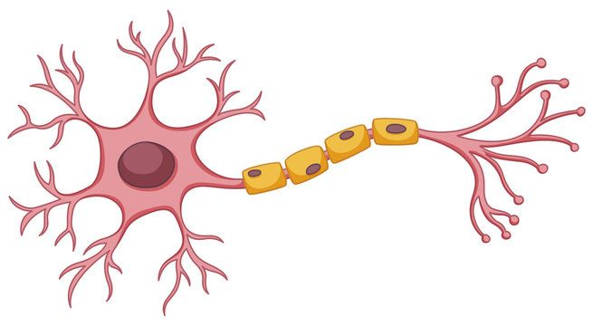
并后缀”(TS)“）与OpenProblems上相应已发布方法的性能比较

基准v2.0.0 [34]。“按细胞类型的完美嵌入带抖动”是代表
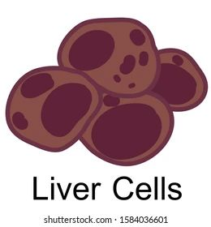
最佳可能性能的正控制方法，“按批次的随机整合”是不执行

任何批次整合的负控制。总体得分是所有数据集和指标的均值。每个

数据集列显示在该数据集上计算的所有指标的均值。每个指标列
显示在所有数据集上计算的该指标的均值。如果指标

无法计算或其性能比最低负控制更差，则分配值为0；这些

显示为空白。c，顶部性能批次平衡[𝑘]近邻（BBKNN）实现的

性能改进，标注了代码创新。基于ComBat的

嵌入生成在实现尝试429中引入。d，

OpenProblems基准[v2.0.0 [34]]非控制方法、我们的方法（有和没有

思想重组）、Gemini Deep Research [35] [36]和我们的AI协作科学家方法的总体得分。Y轴下界
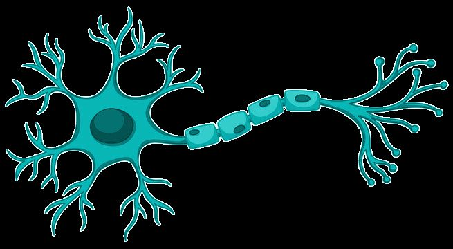
是”按批次随机整合”负控制方法的总体得分。七种

重组、五种基础方法和两种未达到其性能的AI协作科学家方法

被省略。*表示该方法是重组，即使没有明确提示

重组。TS，树搜索；fastMNN，batchelor fastMNN；mnnCorrect，batchelor mnnCorrect。
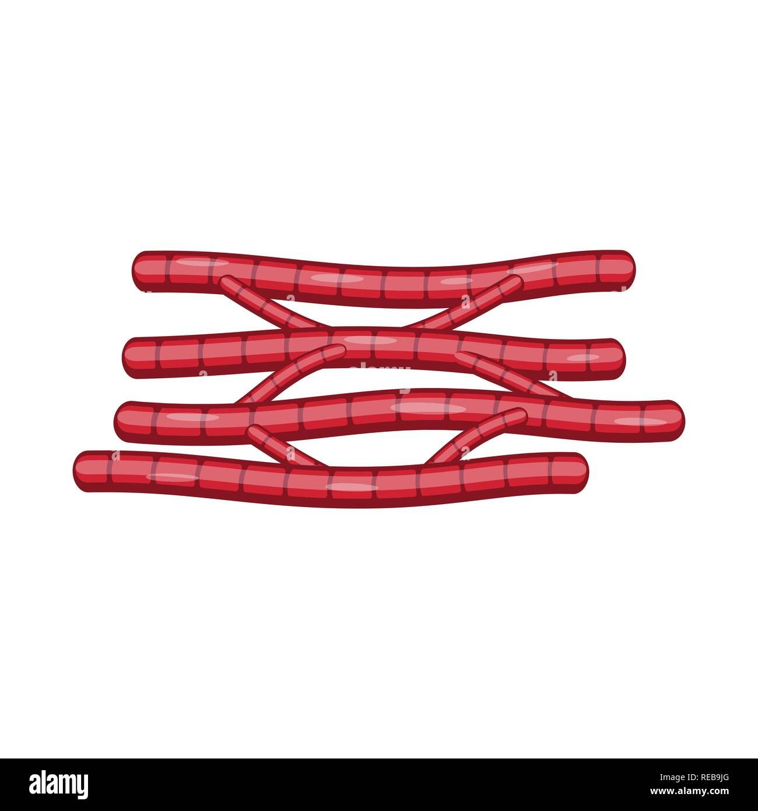


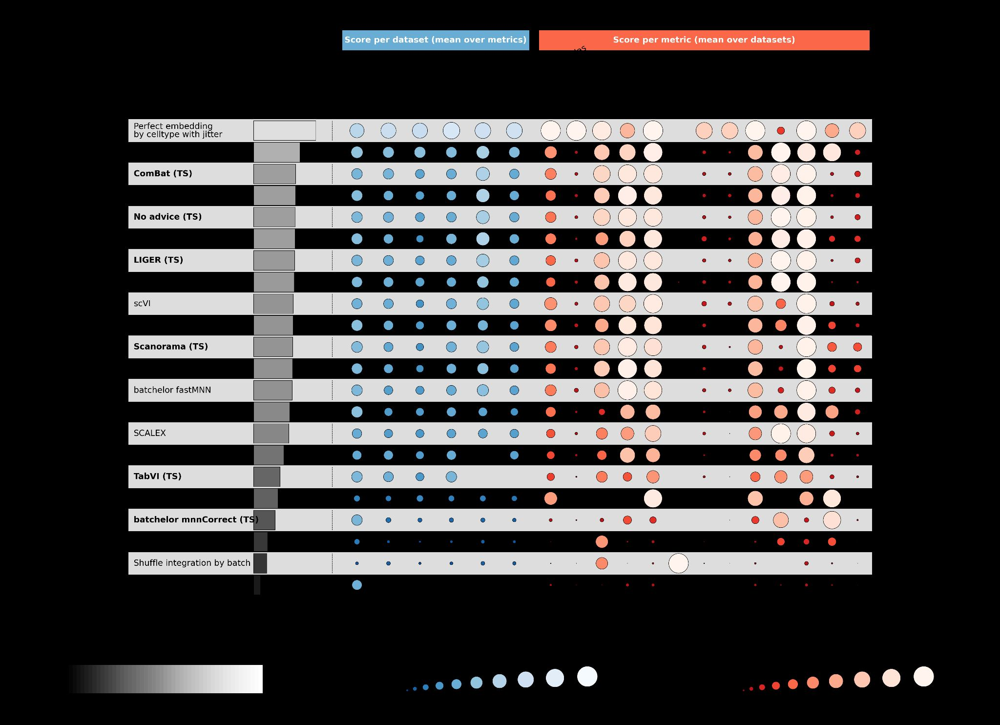


图[35] [36] [7]）。其次，我们还使用Gemini Deep Research和AI协作科学家生成并实现了
21个额外的想法（方法）。总计，6/11种基础方法、29/55种重组、4/9种Deep Research
和1/12种AI协作科学家方法（87种中的40种）优于目前在
OpenProblems排行榜上发布的所有方法（图2d）。这证明了我们方法理解
现有方法最佳特征并有效整合它们以获得卓越性能的能力。
为了进一步理解我们方法探索的概念空间，我们使用Gemini文本嵌入模型
获得每个生成代码的嵌入并计算余弦相似性
（补充图8）。正如预期，复制品彼此表现出显著更高的相似性
与所有其他方法对相比（单侧t检验：t[14] = 12.95，-p = 1.06 × 10；μ = 0.95，重复对；
μ.nn = 其他对0.91；重复对33，其他对 = 5853）。对嵌入进行层次聚类
显示了不同的聚类，通常代表线性方法、基于深度学习的方法，
和非线性非深度学习方法，表明我们的方法能够生成多样化的
解决方案。
美国COVID-19预测的主要基准是COVID-19预测中心（CovidHub），
这是一个由疾病控制和预防中心（CDC）协调的大型协作项目。该
中心吸引了来自顶尖学术机构、行业和政府的数十个专家团队
机构，他们提交使用各种方法生成的每周预测。这些每周
预测必须涵盖美国52个州和地区的新COVID-19相关住院情况
当前周和随后三周的23个指定分位数。使用
加权区间得分（WIS）评估提交，该得分奖励准确性和良好校准的不确定性，
分数越低表示性能越好。
表现最佳的个体模型包括经典自回归时间序列方法（例如，
UMASS-ar6_pooled）、梯度提升机器学习模型（例如，UMASS-gbqr）和流行病学
基于更新方程和生殖数贝叶斯估计的模型（例如，
CEPH-Rtrend_covid）。该中心通过将提交整合为
CovidHub集成模型来利用这种方法多样性，这是一个强大的聚合预测，历史上为美国流行病学预测提供了黄金标准，使其成为一个强大的基准。
我们设计了一个严格的回顾性研究来评估树搜索在这种竞争中的表现
环境。对于每个预测期，我们运行树搜索来优化和选择一个模型，使用
前六周的数据，在整个2024-2025年创建滚动验证窗口
季节（图3a）。我们生成的”Google回顾性”模型的每周表现详见
时间序列排行榜（图3b），该图可视化了我们模型相对于
CovidHub集成模型和其他顶级表现团队的性能优势。补充图9显示了WIS的时间
变化，针对每个单独的验证分割，跨重复补充图10。一个
直接的司法管辖区级别比较确认我们的模型在大多数州获得了更低（更好）的WIS
（图3c），地理性能分布如图3d所示。总体而言，我们的模型
以平均WIS 26获得最高性能，超过了官方CovidHub的表现
集成模型的平均WIS 29。代表性树和突破图如补充所示
图11。
除了这种回顾性性能，我们还调查了我们方法探索解决方案的能力
通过复制、重新组合和生成全新的预测策略来更广泛地覆盖空间
（图3e）。首先，我们测试了它使用仅有的其他团队现有方法来复制的能力
来自CovidHub的简短公开描述（补充表7，补充表8）。我们的
基于树搜索的实现（“基础方法（TS）”）不仅遵循了提供的指令
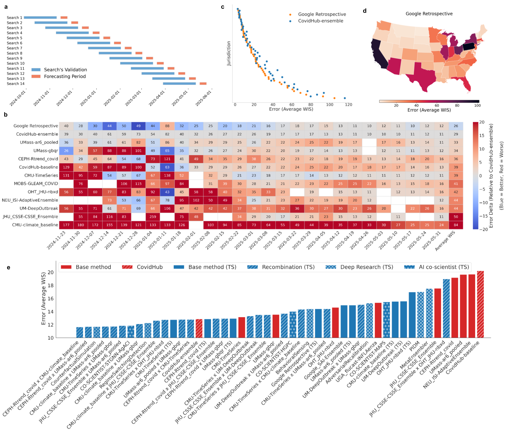
图3 | 树搜索在COVID-19预测上的性能。a， 用于预测实验的滚动验证窗口。每次搜索的输出在前一个时间块（蓝色）上进行内部验证，然后使用生成的模型为其对应的预测期（橙色）进行预测。训练数据包括2020-08-08或之后且在验证集之前的所有日期。b， 时间序列排行榜显示参与团队和我们的”Google回顾性”模型的每周预测性能（平均WIS），按平均WIS排序。分数在所有52个司法管辖区和四个预测水平上聚合。每个单元格内的数字是该模型在那一周的绝对平均WIS。单元格的背景颜色可视化相对于CovidHub集成的性能，蓝色表示较低（更好）的WIS，红色表示较高（更差）的WIS。c， 我们的模型与”CovidHub集成”之间预测误差（平均WIS）的直接司法管辖区级别比较，展示了我们模型在大多数位置的优越性能。d， 我们模型预测误差（平均WIS）的地理分布，在整个2024/25 COVID-19季节上聚合。较低的误差值（较浅的颜色）表示更好的性能。e， 各种建模策略的聚合预测性能比较。这包括来自CovidHub竞赛的基线模型、我们的回顾性模型、我们对提交模型的复制、通过重新组合生成的新混合模型、深度研究和AI协同科学家。14种策略（10种重新组合；两种深度研究；一种AI协同科学家和一种复制基线）在3周（3个参考日期 × 4个时间水平 × 52个司法管辖区）评估期内超过了官方CovidHub集成。表现比CovidHub基线差的模型未显示。
(补充表 [9]) 而且在测试的八个案例中，有六个超越了原始提交的性能；性能较差的两个模型（复制 JHU_CSSE-CSSE_Ensemble 和 OHT_JHU-nbxd）没有使用原始方法实现中存在的外部数据。接下来，我们探索了解决方案是否可以通过重组来改进。在这个实验中，我们提示LLM分析两个不同父模型的核心原理，然后使用其综合结果指导树搜索生成结合各自优势的新型混合策略。如图 [3e,] 所示，28个生成的混合模型中有11个（‘重组 (TS)’）获得了优于两个父模型的WIS分数（补充图 [12]）。我们手动验证了重组实验输出代码的方法论——在所有情况下，最终方法都包含了来自两个父代码的相关方面（补充表 [9]）。最后，我们使用Gemini Deep Research [35] [36] 和AI co-scientist来生成新颖的预测想法，然后通过树搜索实现。总的来说，这种系统性探索产生了14种不同的策略，它们超越了官方CovidHub-ensemble：10种来自重组，2种来自Deep Research，1种来自AI co-scientist，以及1种我们复制的基线。每个生成代码的嵌入向量之间的余弦相似性显示了不同方法之间的聚类（补充图 [13]）。
对这14种顶级性能策略的深入分析揭示了我们的方法如何实现卓越性能的关键模式。重组模型构成了获胜者的大多数，突出了协同杂交的清晰模式。两个基础模型在这些成功的混合体中出现最频繁：简单的、基于气候学(climatology)的CMU-climate_baseline和统计自回归模型UMass-ar6_pooled。这表明树搜索一致发现最有效的策略建立在历史平均值和近期趋势的稳健基础上，然后通过更复杂的方法进行增强。事实上，最成功的重组一致融合了不同的建模范式——例如，将流行病学CEPH-Rtrend_covid模型与统计UMass-ar6_pooled模型配对创建了一个锚定在疾病传播理论中但对近期数据趋势高度响应的混合体，而将强大的机器学习UMass-gbqr模型与稳定的CMU-climate_baseline配对提供了稳健的季节性基础，使ML模型能够安全地专注于学习短期偏差——展示了综合互补优势的能力。
相比之下，通过Deep Research和AI co-scientist生成的新策略代表了超越现有Hub模型的重大概念跳跃。DEEP-RESEARCH-CounterfactualSimulation模型不依赖于过去数据的条件不确定性，而是通过对合理未来场景（例如新变种出现）运行数千次蒙特卡罗模拟来引入无条件不确定性量化。同样，虽然一些基础模型使用深度学习，但CO-SCIENTIST-STGNN-AgACI模型实现了一个更复杂的时空图神经网络(Spatio-Temporal Graph Neural Network)，具有可学习的图结构来明确建模州际动态。DEEP-RESEARCH-RegimeSwitchingDetection模型引入了另一个新颖概念：动态的、事件触发的适应，使用贝叶斯变点检测来自动启动模型重训练以响应底层数据生成过程的变化。最后，我们复制的CMU-TimeSeries (TS)模型的优异表现强调，即使在不发明或杂交时，树搜索也擅长对已经强大的专家设计策略进行精细优化。最终，这证明了树搜索作为科学发现引擎的力量，能够系统地探索广阔的解决方案空间来创新、杂交和优化专家级策略。
我们现在转向地理空间分析中的一个问题：高分辨率遥感图像的语义分割。语义分割是一项计算机视觉任务，涉及为图像中的每个像素分配特定的类别标签。它对于从监测土地使用、评估人类活动的环境影响到管理自然灾害等多样化应用至关重要。主要困难是显著的视觉异质性。同一位置的卫星图像可能因一天中的时间、季节和天气条件的变化而差异巨大，而即使是单一类别（例如建筑物）内的物体也表现出尺寸、形状、高度、功能和光照条件的巨大多样性。
最近的一篇论文 [22] 为高级遥感任务引入了”密集标记遥感数据集”(DLRSD)，包括多标签分类、图像检索和像素级应用如语义分割。该数据集是UC Merced土地使用数据集 [40] 的密集标记版本，这是图像级土地使用分类的广泛使用基准，其中每个图像的单个像素都标记有17个类别标签。
我们提示我们的方法训练一个模型将像素分类为土地覆盖类别，并提供了DLRSD数据集中预先指定的、可重现的80/20训练/测试分割图像。对于每个实验，我们在420个随机选择的保留测试集上验证模型性能
使用标准的”平均交并比”(mIoU)指标对图像进行评估。
通过树搜索生成的三个表现最佳的解决方案显著超越了最近学术论文在DLRSD基准测试上的报告结果，实现了大于0.80的mIoU（表1，补充图14）。这三个解决方案都建立在现有模型、库和策略的基础上。解决方案1和3利用标准的UNet++和U-Net模型，但配对了在ImageNet上预训练的强大编码器（efficientnet-b7和se-resnext101-32x4d）。解决方案2使用SegFormer，这是一种最先进的基于Transformer的架构。模型之间的关键区别包括它们的数据增强和预测策略。UNet++和U-Net模型利用了来自Albumentations库的广泛增强，而Segformer模型使用了更基本的变换集。所有三个解决方案都采用了广泛的测试时增强（TTA），通过预测单个测试图像的多个增强版本（例如，水平翻转、垂直翻转、旋转）的掩码，然后进行反向变换和平均化以产生最终的、更鲁棒的掩码，从而平滑预测误差并提升性能。解决方案3的代表性树和突破图显示在补充图15中。
我们现在考虑斑马鱼活动预测基准（ZAPBench），这是一个最近设计的数据集，用于测试整个脊椎动物大脑中细胞分辨率神经活动的预测。该基准使用新颖的数据集，通过光片荧光显微镜捕获幼鱼斑马鱼在两小时会话中的大脑活动，产生随时间记录的3D大脑体积。在整个记录过程中，动物暴露于不同的视觉刺激条件下，旨在引发一系列不同的行为。原始体积视频数据经过广泛处理，进行对齐、运动稳定化和分割成活动轨迹，最终产生71,721个神经元在7,879个时间步长中的活动轨迹的最终数据矩阵。
几种最先进的预测方法在基准测试上进行了评估，包括对每个神经元提取的活动轨迹进行操作的时间序列预测方法，以及直接处理随时间变化的3D大脑体积的体积视频预测模型（Unet变体）。基于视频的方法利用了在将数据转换为时间序列时丢失的空间信息，但计算成本高昂。在基准测试上评估的不同方法中，基于视频的Unet模型实现了最佳的整体性能，特别是在只有短窗口过去上下文可用的设置中。
我们提示我们的方法解决多元时间序列预测问题，预测
表1 | DLRSD基准测试上的模型性能比较。该表显示了树搜索解决方案和参考论文中方法的发表年份、架构、关键特征和报告的平均交并比(mIoU)。
| 方法 | 年份 | 架构类型 | 关键特征/技术 | mIoU |
|---|---|---|---|---|
| 解决方案1 (TS) | 2025 | CNN (UNet++) | ’efficientnet-b7’编码器，8折TTA | 0.81 |
| 解决方案2 (TS) | 2025 | Transformer(SegFormer) | ’mit-b1’编码器，4折TTA | 0.82 |
| 解决方案3 (TS) | 2025 | CNN (U-Net) | ’se_resnext101_32x4d’编码器，7折TTA | 0.80 |
| RE-Net | 2021 | CNN (基于区域) | 区域上下文学习 | 0.762 |
| FURSformer | 2023 | CNN+Transformer | 自定义融合模块 | 0.753 |
| SCGLU-Net | 2024 | CNN+注意力 | 空间-通道-全局-局部块 | 0.666 |
| MA-UNet | 2022 | 注意力+U-Net | 带simAM的残差编码器 | 0.619 |
| W13 Net | 2025 | CNN (轻量级) | 多阶段编码-解码 | 0.580 |
在时间序列领域中预测所有神经元最多32个时间步长的输出活动，以它们过去4个时间步长的活动作为上下文，使用ZAPBench提供的数据集分割，将每个刺激条件分为70%用于训练，10%用于验证，20%用于测试。我们使用验证集进行模型选择，包括超参数调优和早停，并获得指导树搜索的分数。我们使用跨预测范围平均的平均绝对误差(MAE)对解决方案进行评分，并将树搜索找到的解决方案与ZAPBench中包含的方法进行比较：这些包括线性模型、TiDE、TSMixer、Time-Mix（TSMixer的变体，其中特征混合被消除）和自定义Unet架构。
我们使用树搜索的初始实验导致了一个表现最佳的模型，该模型使用来自输入窗口的丰富特征集，结合时间卷积、学习的”全局大脑状态”和神经元特定嵌入。然后，模型通过一系列权重共享的残差块和最终的密集层处理这些特征，以一次性生成多步预测。图4显示了该模型与其他基线的比较结果。在该图中，均值基线预测上下文窗口的平均值，而刺激基线预测每个刺激阶段的平均值。值得注意的是，树搜索产生的模型优于所有其他基线，包括表现最佳的视频模型，除了1步预测。代表性的突破图和树示例显示在补充图16中。
然后我们开发了另一个专门针对1步预测调优的单独模型
树搜索。所得到的解决方案在概念上与第一个相似，因为两种架构都生成一个学习到的全局上下文向量来指导其每个特征的预测。然而，该模型使用动态注意力机制进行加权聚合来计算其全局上下文，并通过类似FiLM的层[[52]]进行交互式调节来调制特征表示。该模型在1步超前预测上取得了领先性能（图4）。
[1步超前] [4步超前] [8步超前] [16步超前] [32步超前]
[0.035]
[0.030]
[0.025]
[MAE]
[短上下文] [0.020]
[0.015]
[Linear] [[Tide] [[TS] [TS] [TS] [TS] [TS] [Unet] [Tide] [Unet] [Tide] [Unet] [Tide] [Unet] [Tide] [Unet]] [Linear] [Linear] [Linear] [Linear] [Tsmixer] [Tsmixer] [Tsmixer] [Tsmixer] [Tsmixer] [Time-Mix] [Time-Mix] [Time-Mix] [Time-Mix] [Time-Mix] [TS-1-Step] [TS-Jaxley] [TS-Jaxley] [TS-Jaxley] [TS-Jaxley] [TS-Jaxley]]
图4 | 最佳树搜索解决方案与时间序列和视频预测方法在ZAPBench上各种条件下的总平均绝对误差(MAE)比较（越低越好）。对于我们的方法，我们报告了三种不同解决方案的性能（蓝色），并将它们与基线（红色）进行比较。除了我们最佳的通用解决方案(TS)，我们还包括了两次专门运行的结果：一个针对1步超前预测优化的树搜索，以及一个使用Jaxley（一个可微分生物物理神经元模拟器）的解决方案。虚线和实线分别表示均值和刺激基线。为了考虑随机数生成器种子引起的变异性，每种方法运行三次。我们报告均值，误差条表示95%置信区间。
这两种解决方案的训练速度都比表现最佳的视频模型快几个数量级——在单个T4 GPU上不到两小时，而Unet模型在16个A100 GPU上需要36小时。此外，我们的解决方案有效地使用跨神经元信息生成预测，这是以前工作[23]中强调的一个主要挑战。
一个关键的未来方向是开发结合生物物理信息且更具可解释性的模型。即将推出的用于ZAPBench的幼体斑马鱼大脑突触级结构重建为通过整合解剖连接图开发此类模型提供了独特机会。作为初步探索步骤，我们提示我们的方法使用Jaxley[[53]]——一个基于JAX的库，用于生物物理详细神经元模型的可微分仿真——进行树搜索。所得到的最佳性能解决方案使用单室Hodgkin-Huxley模型独立模拟每个神经元。关键是，它根据每个神经元最近的活动历史动态调制其生物物理参数。为了在不承担直接突触仿真计算成本的情况下考虑神经元间相互作用，该模型然后通过潜在自编码器处理这些独立仿真的输出。这学习了一个系统范围的校正信号，有效地建模了功能性连接组——在缺乏结构连接组的情况下这是一种合理的混合方法。虽然该模型没有超越表现最佳的视频模型，但它与时间序列基线具有竞争力（图4）。
时间序列预测：GIFT-Eval
通用时间序列预测模型评估(GIFT-Eval)[24]是时间序列预测的基准，来源于7个不同领域的28个数据集，具有10种不同频率，从秒到年，每月接收约4个新提交，从黑盒深度学习到基础模型。提交使用归一化平均绝对比例误差(MASE)指标在官方训练/验证/测试分割上评分，相对于季节性朴素基线计算。
我们分两个阶段应用我们的方法。我们从每数据集解决方案开始，搜索为每个数据集发现独立解决方案。第二个统一解决方案通过对整个GIFT-Eval的平均分数进行爬山搜索，仅使用基本库创建单个通用预测模型。
每数据集解决方案 在这里我们允许我们的方法使用完整的Python库套件，包括scikit-learn、statsmodels和xgboost。补充表10中的结果优于2025年5月18日排行榜中的结果，超越了基础模型[54-56]、深度学习模型[49,50,57,58]和ARIMA等标准时间序列方法。发现的解决方案显示出对梯度提升和集成/分解模型的强烈收敛（补充图17）。
统一解决方案 我们想知道代码变异系统是否可以通过在整个GIFT-Eval数据集上对平均MASE进行爬山搜索，使用单个代码从头创建统一的通用预测库。为了管理基准的多样性，我们允许库具有自适应配置系统，它可以生成多达8个预设超参数配置以适应数据集的多样性，验证步骤为每个数据集选择最佳性能配置。随着搜索的进行，日期和趋势相关特征经常导致性能突破，产生一个顺序预测和减去单个时间序列的模型
组件，包括基础水平、趋势、季节性、基于日期时间的特征以及最终的残差修正。补充图18显示了搜索的突破图和树结构。
配置（补充表11）包括特定日期的特征，其中包括一个针对特定国家（[‘US’, ‘DE’, ‘CN’, ‘GB’, ‘CA’, ‘AU’]）节假日的特征化功能。所得到的统一解决方案在排行榜上具有很强的竞争力（补充表10）。
最后，我们转向数值分析中的一个问题，即使用高斯求积法对困难积分进行数值计算。黄金标准是由美国政府研究实验室在1980年代开发的[59]，被广泛用作流行的Python函数scipy.integrate.quad()的核心库。尽管如此，该函数可能在多个方面失败，其中包括：底层算法可能无法收敛；算法对其被积函数进行采样，采样可能错过重要特征；当问题表现出精确的相消时，算法会失去精度。
虽然存在解决这些问题的标准技术，但我们询问我们的方法是否能够构建一个优于quad()的通用方法，通过在一组基准积分上进行爬山搜索，其中标准算法失败但积分的解析答案是已知的。我们从标准应用数学参考书[60]中构建了这组积分，专注于具有无限上限的振荡积分且没有其他病理特征，但标准quad()库返回了不正确的答案。这产生了一组38个积分（补充图19）。
我们随机将这些积分分为两半，使用19个进行搜索评分，并保留另外19个进行评估。然后我们用简单的quad()调用初始化我们的方法，并提示系统改进它，使用绝对分数误差的对数对解决方案进行评分，其中对数防止搜索过度加权异常值。补充图20显示了搜索的突破图和树结构。
最佳解决方案基于quad()，通过将无限域分割为一系列连续的有限子区间，这些子区间的长度可能几何增长，以更有效地覆盖域的尾部。因此，定积分被转换为无限级数，其中每一项是使用quad()计算的被积函数在这些有限段之一上的数值积分。对于收敛缓慢的积分，例如具有振荡被积函数的积分，这个级数的直接求和是不切实际的。
该算法因此应用欧拉变换(Euler’s transformation)，这是一种强大的级数加速技术，应用于这个段积分序列。通过重复平均相邻项，该变换从有限数量的初始项中推断出缓慢收敛级数的极限，提供积分真值的准确估计。
而scipy.integrate.quad()在保留集中的每个问题上都失败了，进化代码正确评估了保留积分中的17个（共19个），分数误差小于3%（补充图21）。
进化代码总是首先应用scipy.integrate.quad()。只有当quad()返回大的误差估计、返回NaN或Inf，或引发异常时，它才退回到其更专门的方法。这意味着进化代码在不太病态的情况下与quad()一样准确，因此可以合理地用作即插即用的替代品。
我们的工作介绍了一个基于AI的系统，该系统通过大语言模型(Large Language Model, LLM)驱动树搜索(Tree Search, TS)来系统地创建和改进科学任务的软件。通过将创建科学软件的问题定义为寻找输出最大化质量分数的程序的搜索，我们将软件创建转换为”可评分任务”，产生经验软件。我们的方法在其LLM驱动的重写方法上是新颖的，它允许灵活集成领域知识和外部研究想法。前沿LLM密切遵循指令的能力使得研究想法的高效探索成为可能。我们的方法建立在几个不同但相关的研究领域的思想之上：遗传编程(Genetic Programming)、生成式编程(Generative Programming)、LLM在代码中的应用、自动化机器学习(Automated Machine Learning, AutoML)以及科学发现的智能体(agents)。
遗传编程 —— 自动进化计算机程序来解决问题的想法并不新鲜。遗传编程(GP)为我们的工作提供了基础。在GP中，程序群体使用选择、交叉和变异等进化原理进行迭代改进。每个程序的适应度由”适应度函数”确定，这直接类似于我们的”质量分数”[61]。虽然GP已经成功，但它传统上依赖于随机变异和代码片段的结构化重组（例如，在抽象语法树中交换子树）。我们系统的一个关键差异是使用LLM执行智能的、语义感知的”变异”，通过重写代码，这可以产生比GP中典型的随机变化更复杂和有意义的变化。
生成式编程 —— 我们的系统可以被视为这一概念的现代AI驱动实现。在传统的生成式编程中，开发者创建一个程序生成器（使用
技术如模板、领域特定语言[[62],]或元编程）来为一系列相关问题[[63]]生成定制的
源代码。相比之下，我们采用由树搜索引导的LLM作为生成引擎。这种方法提供了更大的灵活性，使系统能够通过探索广阔的解决方案空间并以模板化方法难以实现的方式整合多样化的领域知识来合成新颖的程序。
用于代码生成的LLMs — 在大量代码语料库上预训练的大型语言模型的出现彻底改变了代码生成。像OpenAI的Codex[[64]]和Google DeepMind的AlphaCode[[65]]这样的系统已经展示了从自然语言描述生成正确且复杂代码的能力。这些系统通常用于从提示进行”一次性”生成。我们的方法不同之处在于在迭代完善循环中使用LLM。我们的LLM不是从头生成代码，而是重写现有的软件候选方案，由使用质量分数作为信号的搜索算法（TS）引导。
结合LLMs和搜索 — 最相关的工作涉及将LLMs与搜索算法结合以克服一次性生成的局限性。一个最近的例子是Google DeepMind的FunSearch，它使用LLM搜索新的数学发现[[16].]。FunSearch通过将创造性LLM与自动评估器配对来工作。LLM建议对现有程序的改进（新代码），只有通过评估的改进才会被保留。这创造了一个进化反馈循环。这在概念上与我们系统使用LLM重写器和质量分数非常相似。但是，我们的系统使用TS（一种用于探索大型搜索树的强大算法）来概括搜索过程。我们的系统还整合了文献中的知识。
AutoML — 我们的工作在概念上与自动机器学习(AutoML)相关。AutoML系统旨在通过搜索最优模型架构和超参数来自动化构建机器学习管道的过程。目标是在验证数据集[[66],]上最大化性能指标（例如，准确率、F1分数），这符合我们对可评分任务的定义。虽然AutoML专门专注于在固定的ML框架集合内找到最佳模型，但我们的系统更加通用。它可以重写任何软件，包括预处理步骤、复杂模拟或数学启发式——这些领域超出了AutoML的典型范围。
科学问题的智能体 — 这个子领域已经看到了来自高度专业化系统[[67]]的卓越表现，超越了专家水平。现有文献的大部分关注于在单一领域内自动化标准工作流程的智能体，如计算生物学[[68]–[72],]或作为其提案需要大量人工验证的构思助手[[73],[74]]。我们的系统不是专门化于一个领域，而是展示了通用的问题解决能力，在多个领域的公共排行榜和学术文献中达到了超越专家的性能。
总结来说，我们开发了一种将基于树搜索[[12],[13]]的代码变异系统与整合复杂研究想法的能力相结合的方法。这些研究想法可能来自已发表的文献、研究智能体（例如[35],[36],[[75]]）或来自LLM自己发现的先前想法和解决方案的组合。因为系统创建的代码可以遵循特定的想法，它可以搜索外部提供的研究想法。我们在广泛的科学可评分任务上进行了演示，在整合和探索复杂研究想法时达到了专家水平。
我们的方法创建了40种方法击败了scRNA-seq批次整合的最佳已知方法，以及14种方法在流行病学预测方面优于CDC集成。此外，我们的方法在地理空间推理、神经活动预测、时间序列预测和计算数学算法方面取得了最先进的性能。通过最少的提示，系统为地理空间推理中的基本任务发明并实现了组合复杂架构（U-Nets、transformers）的想法，在神经活动预测中不仅能够超越当前基准测试中的所有方法，还轻松地将生物物理模拟器整合到高性能解决方案中。
试错对科学进步至关重要，无论是对人类还是对我们在这里概述的自动化方法。该系统能够异常快速地生成专家级解决方案，将一套想法的探索从数周或数月缩短到数小时或数天。以这种方式加速研究对科学进步具有深远的影响。基于这项工作，我们相信在机器可以评分解决方案的科学领域中的进步正处于革命性加速的边缘。
致谢
我们感谢Google Research和Google DeepMind的同事们为我们提供了完成这项工作的绝佳环境。我们特别感谢Niv Efron、Viren Jain、Anupam Pathak和Jamie Smith进行的许多深刻讨论，以及Nicholas Reich对手稿的评论。
作者贡献声明
代码变异系统（E.A.、A.B.、G.C.、M.C.、H.C.、P.N.、D.S.、J.T.、S.V.、M.P.、J.K.、P.R.、J.W.、L. W.、
S.M. 和 M.P.B.) 单细胞RNA测序批次整合(Single Cell RNA-seq Batch Integration) (A.Be., C.Y.M., C.H., Y.Z., M.P.B.) COVID
预测 (Z.S., S.M., M.P., M.C., M.P.B.) 地理空间分析(Geospatial Analysis) (R.J., Je.C., Q.Z., M.P.B.) ZAPBench
(B.P.W., J-M.L, Q.Z.) GIFT-Eval (J.G., M.P.B.) 积分 (A.K., R.K., M.P.B.) 用户界面 (E.A., G.C.,
P.N., A.K., M.K., M.P.B., J-M.L., D.L., J.K., C.C., S.E.) 图形设计 (G.J.) 项目管理
(M.A., E.B.) 领导力 (K.C., J.M., Y.M., J.C.P., L.D., S.M., M.P.B.)
代码可用性
我们正在开源本文中概述的每个示例生成的最佳候选解决方案(github.com/google-research/score)。此外，我们还提供了一个用户界面，用于检查论文中讨论的六个科学问题中每个代表性示例的完整树搜索数据。该界面允许在树搜索进行时检查解决方案进展和突破图表，并突出显示代码差异。
方法
代码变异系统
我们提示LLM（补充图22），提供描述、评估指标和相关数据。LLM生成Python代码，然后在沙箱中执行并评分。
在策略上搜索显著提高了性能：智能体使用分数以及输出日志和其他信息来爬坡寻找更好的分数。我们使用了一种受AlphaZero启发的带有上置信界(Upper Confidence Bound, UCB)的树搜索(Tree Search, TS)策略。与AlphaZero的一个关键区别是，我们的问题不允许穷举枚举节点的所有可能子节点，因此每个节点都是扩展的候选。因此，我们修改了UCB算法，使用树来计算访问次数和均值。然而，在采样要扩展的节点时，我们直接从整个集合中采样，而不是像AlphaZero那样从根部递归。
我们还注意到，该算法与传统的TS不同，因为节点的评分不涉及随机推演（例如游戏）来估计节点的价值。然而，评分每个节点仍然存在随机性，这是由LLM本身的采样引起的，它为每个固定提示产生不同代码（分数）的分布。
我们使用PUCT树搜索算法来探索笔记本的空间。PUCT（预测器 + 应用于树的上置信界）算法在算法1中描述。对于树T和执行的候选u，我们定义平坦先验P_T(u) = 1/|T|。为了更容易在不同任务中调整探索常数c_puct，我们在PUCT公式中将任务特定分数TaskScore()转换为排名分数RankScore_T(u)。我们定义RankScore_T(u) = (|T| - Rank_T(u))/(|T| - 1)，当|T| > 1时，否则为1，其中Rank_T(u)给候选者升序排名。
算法1 UCB树搜索（PUCT）
输入： GenerateAndExecute()，TaskScore()来定义排名分数RankScore_T(u)，探索常数c_puct，和一个根节点r。
1: T ← {r} ⊲ 用根节点初始化树。
2: V(r) ← 1
3: 对于所有 迭代 做
4: N_total ← ∑_{u∈T} V(u) ⊲ 获得所有节点的总访问次数
5: 选择 u* ← argmax_{u∈T} RankScore_T(u) + c_puct P_T(u) √(N_total)/(1 + V(u)) ⊲ 选择具有最高PUCT分数的节点
6: u_c ← GenerateAndExecute(u*) ⊲ 扩展选定的节点并执行
7: T ← T ∪ {u_c}
8: V(u_c) ← 1
9: 对于 u_c的所有祖先u_a（除了u_c）做 ⊲ 反向传播结果
10: V(u_a) ← V(u_a) + 1
11: 结束for
12: 结束for
13: 返回 argmax_{u∈T} TaskScore(u) ⊲ 找到的最佳解决方案
向代码变异系统添加研究想法
当专家解决困难的科学问题时，他们经常搜索先前的工作以获得想法。先前的工作可能来源于高引用论文、专业教科书或搜索引擎。对先前工作的搜索也可以由LLM支持。
我们通过在代码变异系统的提示中注入执行研究想法的指令来模拟专家行为（图1）。我们将研究指令注入应用于scRNA-seq批次整合、COVID预测、遥感图像分割和全脑神经活动预测。虽然最成功的结果使用了文献中的顶级方法，我们也使用了两种LLM驱动的搜索策略：来自Gemini 2.5 Flash的深度研究和AI科学家。
为了运行这些搜索，我们为工具提供了来自主要问题描述的背景信息，并指示模型创建不同的想法（补充表12）。在手动筛选提案并删除一个提出的scRNA-seq批次整合方法后，我们提示Gemini将想法格式化为与我们基线方法描述一致的结构（补充表13）。最后，我们在这些想法上运行我们的方法来创建可以评分的实证代码。
重组实验
对于scRNA-seq批次整合问题和COVID-19预测，我们结合了已经使用树搜索生成的方法的想法。对于scRNA-seq批次整合问题，我们使用了11种基线方法的第一个版本。对于COVID-19预测问题，我们使用了八种
来自提交到CovidHub的模型复制。我们首先从每个树搜索运行中选取表现最佳的节点
基于其在验证集上的分数播种这些方法之一（对于COVID-19
预测，这包括从2025-02-22到2025-03-29的六周参考日期）。然后，对于
这些方法的每一对，我们提示Gemini 2.5 Flash比较两种方法并解释
两个父模型之间的核心技术相似性和差异，使用一致的
提示（补充表6）。然后将解释性响应添加到提示中，连同
一个指示树搜索通过结合两种方法的最佳部分来重新组合想法的声明
方法（补充表14）。随后，我们运行我们的方法来生成新的混合
策略。这个过程为scRNA-seq批次整合问题产生了55种重新组合的方法，
为COVID-19预测问题产生了28种（在三周保留集2025-04-05到
2025-04-19上评估，见图3d）。
Gemini嵌入 对于每个树搜索实现，我们将代码片段输入到Gemini
文本嵌入模型[79]，生成的3,072维输出向量作为语义
其各自实现的表示。
对于所有scRNA-seq实验，我们运行了500个节点的树搜索。每个实验大约需要
在我们的基础设施上执行七小时。
数据集[27] 我们从CZ CELLxGENE Discover获取了一个数据集，用于树搜索的爬山算法
搜索。为了识别与六个OpenProblems.bio测试数据集不同但具有
相似特征的数据集，我们过滤到只包含健康人类细胞的数据集，主要
细胞计数 ≥ 2,000，至少10种独特的细胞类型，至少七个独特的供体ID（即批次数量），并包含至少两种独特的检测方法，这些方法也存在于OpenProblems.bio
数据集中。这个过滤过程识别出22个候选数据集。在手动调查
候选数据集后，我们选择了数据集364bd0c7-f7fd-48ed-99c1-ae26872b1042版本
ffdaa1f0-b1d1-4135-8774-9fed7bf039ba[19]。
在选定的数据集内，我们应用了与OpenProblems.bio数据集上执行的处理相同的质量控制指标和数据处理步骤[80],[81]，产生了一个处理过的数据集，其中包含
标准化表达值、高变基因、主成分和k近邻
全部计算完成。为了计算效率，我们随机选择了两个不相交的N = 20,000个
细胞的子集，试图匹配整个处理数据集的（批次，细胞类型）分布。
“训练”数据集用于模型训练和在单个树搜索中选择表现最佳的节点。“验证”数据集用于选择我们运行同一算法多个复制的方法中的最佳树搜索（补充图1）。
在OpenProblems.bio基准上评估scRNA-seq批次整合 我们下载了OpenProblems v2.0.0输入和解决方案数据，从s3://openproblems-data/resources/task_batch_integration/datasets/cellxgene_census/和原始性能指标，从s3://openproblems-data/resources/task_batch_integration/results/run_2025-01-23_18-03-16/score_uns.yaml。我们计算控制缩放指标结果与发布的OpenProblems结果相同。简而言之，对于每个（数据集，指标），原始分数的下限和上限定义为七种”控制”方法达到的最小值和最大值。原始值在这些极值之间线性缩放并钳制在[0,1]中。总体分数计算为所有78个测量值的算术平均值（为6个数据集中的每一个计算13个指标），NaN值替换为0（即，无法计算指标会导致其被视为最差可能分数）。
批次整合现有方法的复制 OpenProblems.bio基准分析了几种最先进现有方法的性能。截至2025年7月11日，有19种不同的方法。三种方法在R和Python中都有实现：LIGER和pyliger，Harmony和Harmonypy，以及batchelor mnnCorrect和mnnpy。在将相同方法的重新实现分组后，有16个独立的研究想法。从这个列表中，我们排除了所有六种基础模型方法（UCE、SCimilarity、scGPT（零样本）、scGPT（微调）、Geneformer和scPRINT），因为它们在基准测试中表现很差，并使用了更大的训练集。例如，只有一个基础模型（UCE）比”无整合”的负控制表现更好，后者只是对数据集执行PCA。我们进一步排除了scANVI，这是scVI的修改版本，使用细胞类型信息进行训练。由于细胞类型信息用于定义指标，这代表数据泄漏，因此我们将scANVI视为控制方法。这导致了九种现有的不同研究方法用树搜索进行优化。
对于九种现有方法中的每一种，我们获得了相应的手稿PDF
方法。为了从手稿中获得简短的方法描述，我们使用了Gemini 2.5 Pro Thinking来总结论文（提示在补充表15中，示例输出在补充表16中）。对于batchelor fastMNN，这是batchelor mnnCorrect的更快实现，没有单独的出版物，因此我们提供了batchelor mnnCorrect的论文PDF以及来自https://rdrr.io/github/LTLA/batchelor/man/fastMNN.html的batchelor fastMNN对应的文档字符串（详细信息部分），并稍微调整了提示。最后，方法摘要被添加到树搜索笔记本中，用于根据方法摘要提出更好的代码解决方案。
对于九种方法中的每一种，我们运行了三次树搜索重复实验。对于图2，我们选择了基于验证集得分表现最佳的重复实验。我们在补充图3中显示了所有重复实验的性能。
超参数 为了确定每种基础方法的最优超参数，我们采用了Optuna，这是一个自动化超参数优化框架[82]。搜索空间由专家在整数、浮点数和分类参数类型上定义。优化过程运行总共五倍于参数数量的次数。在每次试验中，使用采样的参数集训练模型，并基于Optuna的树结构Parzen估计器(TPE)采样器旨在最大化的性能指标进行评估。所有超参数优化仅在训练数据集上进行。然后利用识别出的最佳超参数集来训练最终的基础方法，并在保留的OpenProblems数据集上评估它们。
COVID-19预测
数据集 我们的主要数据源是历史确诊COVID-19住院人数，这对应于CovidHub指定的目标变量。这些数据由CDC在国家医疗安全网络(NHSN)医院呼吸道数据(HRD)数据集[83]中每周发布。预处理保持最少——数据集中的缺失值被零替换，以使树搜索能够找到具有标准分数(WIS)的可执行代码。用于增强我们模型目标的唯一额外数据源是来自CovidHub GitHub存储库[21]的静态管辖区特定人口值。为了在图3c中比较模型性能，我们使用了提交给Forecast Hub的所有模型，这些模型在州级别进行预测，并且至少有75%的季节和时间范围的预测。我们为每次报告的运行使用2000个节点运行树搜索。
现有COVID-19预测模型的复制 我们基于以下纳入标准从那些已提交给CovidHub的模型中选择了八个模型进行复制：(1)该方法必须仅使用历史COVID-19住院数据就能复现，不依赖外部预测变量，(2)模型提交必须包括所有指定时间范围的预测，(3)模型提交必须可用超过三个月(12周)以实现有意义的比较。三个模型因未能满足这些标准而被排除：两个是外部预测的集成，一个完全依赖额外数据。另外五个模型被排除，因为它们没有为所有预测范围提供预测。这五个模型来自同一个预测团队。由于我们的所有分析都涉及跨范围聚合模型性能，我们将这五个模型从所有比较中排除。总的来说，这给出了八个模型用于复制。
为了指导搜索算法，我们提供了来自原作者官方提交元数据的方法描述。例如，UMASS-arc6-pooled模型的元数据说明：“四次根数据变换后的AR(6)模型。AR系数在所有位置间共享。为每个位置估计单独的方差参数。”我们将这些简洁的描述直接集成到树搜索提示中作为模型指令的一部分，通过在前面加上’使用一个/一种’将它们转换为指令（见方法，补充表8）。
GIFT-Eval基准测试
我们将树搜索方法应用于通用时间序列预测模型评估(GIFT-Eval)基准测试[24]。搜索从由初始代码模板定义的根节点开始，通过爬山法进行，在此过程中生成新的候选解决方案并根据GIFT-Eval验证折进行评估。在树搜索结束时，我们使用MASE点预测作为评分指标在保留的测试集上评估解决方案。我们的结果基于2025年5月18日的数据集快照、官方排行榜和评分，所有这些自那时以来都已更新。有关排行榜的完整快照，请参见补充表10。
我们遵循基准测试的框架，利用来自Hugging Face的官方数据集源、其预定义的训练、验证和测试分割，以及现有提交笔记本中常用的评分和评估代码。
每数据集解决方案 我们对97个GIFT-Eval数据集中的92个进行了单独的树搜索，
由于计算约束，排除了最大的五个数据集；对于这些数据集，使用朴素基线分数来产生聚合排行榜分数。对于每个数据集，我们使用了300个节点的搜索，允许智能体使用广泛的机器学习库套件，包括scikit-learn、XGBoost和statsmodels。补充图17显示了在92个不同解决方案中使用的模型类型分析。
在这里，我们创建了一个单一的、统一的预测库，可以在所有97个数据集上进行泛化。我们使用了超过1,000个节点的树搜索，以所有数据集的标准化MASE分数的几何平均值为指导，提供了一个单一的目标函数进行优化。为了迫使模型从第一性原理进行推理，其访问权限被限制在基本库（numpy、pandas和holidays）。
最终解决方案由两个组件组成：一个单一的预测库和八个预设配置的列表。对于每个数据集，在验证集上识别出最佳性能配置。然后使用这个选定的配置与统一库一起在测试集上产生最终预测，允许模型在不看到测试数据的情况下调整其策略。
最终解决方案是迭代开发的。初始搜索产生了MASE为0.82的基础模型。当搜索空间扩展到十个配置并建议智能体使用holidays库时，在后续运行中取得了关键突破，将MASE改善到0.77（补充图18）。最终的500节点优化运行将配置精简为优化的八个配置集，实现了0.734的最终MASE。
最终解决方案顺序建模并移除序列的基本组件，最终预测是各个组件预测的总和。这种方法允许模型高度可配置，同时系统地考虑数据中不同的变异来源。此过程通过以下步骤概述：
预处理： 输入序列首先进行基本清理，包括对任何缺失值进行中位数插补。可以应用可选的对数变换（log1p）来稳定具有指数增长模式的序列的方差。
基础/水平组件： 使用简单但稳健的方法（如季节性朴素预测或最近数据点的滚动中位数）建立基础水平。此组件捕获序列的基本量级。
趋势组件： 然后对基础组件的残差进行建模以捕获线性或多项式趋势。此步骤包括阻尼因子(damping_factor)，通过逐渐平缓趋势来防止不现实的长期外推。
季节性组件： 分析趋势组件的残差以建模周期性模式（例如，每周、每年）。模型识别周期长度，并通过平均周期中相同点的值来预测季节性（例如，所有星期一的平均值）。
日期时间和假日特征： 为了捕获特殊事件和非季节性周期，从时间戳中提取特征（例如，dayofweek、is_holiday_flag）。模型从剩余残差中计算每个特征类别的中位数效应，并将其添加到预测中。
残差修正： 作为最后一步，通过建模最近未解释误差的中位数进行修正。这种类似自回归的步骤有助于修正模型中的短期偏差。衰减因子(decay_factor)在预测范围内减弱其影响。
要将统一解决方案应用于新数据集，首先需要将历史数据分为训练集和验证集。使用库的自适应配置系统，然后可以通过在验证数据上评估八个预设配置来找到合适的预测策略，选择性能最佳的配置。这提供了一个强大的、数据驱动的起点，可以直接使用。
对于更专业的应用，还可以创建自定义配置，允许手动调整模型组件，使库既开箱即用又足够灵活以供专家调优。
我们使用1000个节点进行了树搜索，使用补充图21中的积分列表。为了构建这些积分列表，我们从Gradshteyn和Ryzhik的LaTeX形式的长积分列表开始。我们使用SymPy将问题和解答都转换为python表达式。大多数表达式包括自由参数，通常带有值约束。为了实现数值评估，我们为所有参数生成了符合约束的随机值。
一旦积分及其答案以SymPy表达式对象的形式存在，我们通过使用sympy.Expr.subs()替换我们选择的参数值并通过sympy.evalf()评估来进行数值答案评估。我们通过sympy.lambdify构建适合scipy.integrate.quad()的被积函数以实现高效评估。我们将每个数值答案与scipy.integrate.quad()返回的数字进行比较，并丢弃在后者误差估计内一致的情况。我们还丢弃了误差估计大于数字量级2%的情况。
从LaTeX到SymPy的所有转换以及所有约束参数生成都由Gemini使用专门的提示执行。生成的SymPy表达式和参数值
手工检查了正确性。这些手工步骤是我们数据集规模的限制因素。
我们在训练期间使用的评分函数使用绝对分数误差（生成解决方案的数值与答案数值之间的差异），通过对数来防止异常值主导结果。
score = −log(1 + |response - answer|/answer) (1)
[1] Fortin, J. A., Cardille, J. A. & Perez, E. Multi-sensor detection of forest-cover change across 45 years in Mato Grosso, Brazil. Remote Sens. Environ. 238, 111266 (2020).
[2] Hohenberg, P. & Kohn, W. Inhomogeneous electron gas. Phys. Rev. 136, B864 (1964).
[3] Kohn, W. & Sham, L. J. Self-consistent equations including exchange and correlation effects. Phys. Rev. 140, A1133 (1965).
[4] Warshel, A. & Levitt, M. Theoretical studies of enzymic reactions: dielectric, electrostatic and steric stabilization of the carbonium ion in the reaction of lysozyme. J. Mol. Biol. 103, 227–249 (1976).
[5] Jumper, J. et al. Highly accurate protein structure prediction with AlphaFold. Nature 596, 583–589 (2021).
[6] Baek, M. et al. Accurate prediction of protein structures and interactions using a three-track neural network. Science 373, 871–876 (2021).
[7] Hourdin, F. et al. The art and science of climate model tuning. Bull. Am. Meteorol. Soc. 98, 589–602 (2017).
[8] Anderson Jr., J. Basic philosophy of CFD. In Computational Fluid Dynamics, 3–14 (Springer, 2009).
[9] Silver, N. The signal and the noise: why so many predictions fail-but some don’t (Penguin, 2012).
[10] Farmer, J. D. Making sense of chaos: a better economics for a better world (Yale Univ. Press, 2024).
[11] Bernanke, B. & Blanchard, O. What caused the US pandemic-era inflation? Am. Econ. J. Macroecon. 17, 1–35 (2025).
[12] Silver, D. et al. Mastering the game of Go with deep neural networks and tree search. Nature 529, 484–489 (2016).
[13] Silver, D. et al. Mastering the game of Go without human knowledge. Nature 550, 354–359 (2017).
[14] Jiang, Z. et al. AIDE: AI-driven exploration in the space of code. arXiv preprint arXiv:2502.13138 (2025).
[15] Novikov, A. et al. AlphaEvolve: A coding agent for scientific and algorithmic discovery. arXiv preprint arXiv:2506.13131 (2025).
[16] Romera-Paredes, B. et al. Mathematical discoveries from program search with large language models. Nature 625, 468–475 (2024).
[17] Wu, X., Wu, S.-h., Wu, J., Feng, L. & Tan, K. C. Evolutionary computation in the era of large language model: survey and roadmap. IEEE Trans. Evol. Comput. (2024).
[18] Hu, S., Lu, C. & Clune, J. Automated design of agentic systems. arXiv preprint arXiv:2408.08435 (2024).
[19] Xu, C. et al. Automatic cell-type harmonization and integration across Human Cell Atlas datasets. Cell 186, 5876–5891.e20 (2023).
[20] Regev, A. et al. The Human Cell Atlas. eLife 6, e27041 (2017).
[21] Centers for Disease Control and Prevention. COVID-19 forecast hub (2025). URL https://github.com/cdcgov/covid19-forecast-hub?tab=readme-ov-file.
[22] Shao, Z., Yang, K. & Zhou, W. Performance evaluation of single-label and multi-label remote sensing image retrieval using a dense labeling dataset. Remote Sens. 10, 964 (2018).
[23] Lueckmann, J.-M. et al. ZAPBench: a benchmark for whole-brain activity prediction in zebrafish. arXiv preprint arXiv:2503.02618 (2025).
[24] Aksu, T. et al. GIFT-Eval: a benchmark for general time series forecasting model evaluation. arXiv preprint arXiv:2410.10393 (2024). URL https://huggingface.co/spaces/Salesforce/GIFT-Eval.
[25] Jovic, D. et al. Single-cell RNA sequencing technologies and applications: a brief overview. Clin. and Transl. Med. 12, e694 (2022).
[26] Svensson, V., Vento-Tormo, R. & Teichmann, S. A. Exponential scaling of single-cell RNA-seq in the past decade. Nat. Protoc. 13, 599–604 (2018).
[27] CZI Cell Science Program et al. CZ CELLxGENE Discover: a single-cell data platform for scalable exploration, analysis and modeling of aggregated data. Nucleic Acids Res. 53, D886–D900 (2025).
[28] Zhang, J. et al. Tahoe-100M: a giga-scale single-cell perturbation atlas for context-dependent gene function and cellular modeling. bioRxiv 2025–02 (2025).
[29] Stuart, T. & Satija, R. Integrative single-cell analysis. Nat. Rev. Genet. 20, 257–272 (2019).
[30] Zappia, L., Phipson, B. & Oshlack, A. Exploring the single-cell RNA-seq analysis landscape with the scRNA-tools database. PLoS Comput. Biol. 14, e1006245 (2018).
[31] Tran, H. T. N. et al. A benchmark of batch-effect correction methods for single-cell RNA sequencing data. Genome Biol. 21, 1–32 (2020).
[32] Chazarra-Gil, R., van Dongen, S., Kiselev, V. Y. & Hemberg, M. Flexible comparison of batch correction methods for single-cell RNA-seq using BatchBench. Nucleic Acids Res. 49, e42 (2021).
[33] Luecken, M. D. et al. Benchmarking atlas-level data integration in single-cell genomics. Nat. Methods 19, 41–50 (2022).
[34] Luecken, M. D. et al. 定义和基准测试单细胞分析中的开放性问题。Nat.
Biotechnol. 43, 1035–1040 (2025).
[35] Google. Gemini Deep Research (2025). URL https://gemini.google/overview/
[36] Gottweis, J. et al. 迈向AI协同科学家。arXiv preprint arXiv:2502.18864 (2025).
[37] Johnson, W. E., Li, C. & Rabinovic, A. 使用经验贝叶斯方法调整微阵列表达数据中的批次效应。Biostatistics 8, 118–127 (2007).
[38] Polański, K. et al. BBKNN: 单细胞转录组的快速批次对齐。Bioinformatics 36,
964–965 (2019).
[39] Chandrashekar, A. et al. TabVI: 利用轻量级Transformer架构学习具有生物学意义的细胞表示。bioRxiv 2025–02 (2025).
[40] Yang, Y. & Newsam, S. 视觉词袋和空间扩展在土地利用分类中的应用。收录于
Proc. 18th SIGSPATIAL Int. Conf. on Adv. in Geogr. Inf. Syst., 270–279 (Association for Computing
Machinery, 2010).
[41] Russakovsky, O. et al. ImageNet大规模视觉识别挑战。Int. J. Comput. Vis.
115, 211–252 (2015).
[42] Krizhevsky, A., Sutskever, I. & Hinton, G. E. 使用深度卷积神经网络进行ImageNet分类。Adv. Neural Inf. Process. Syst. 25 (2012).
[43] Zhong, B., Du, J., Liu, M., Yang, A. & Wu, J. 用于遥感图像语义分割的区域增强网络。Sensors 21 (2021).
[44] Zhang, Z., Liu, B. & Li, Y. FURSformer: 融合异构特征的遥感图像语义分割网络。Electronics 12 (2023).
[45] Atiampo, A. K. & Diédié, G. H. F. 用于超高空间分辨率遥感图像语义分割的空间和通道注意力新融合方法。Open J. Appl. Sci.
14, 288–319 (2024).
[46] Sun, Y., Bi, F., Gao, Y., Chen, L. & Feng, S. 用于遥感图像语义分割的多注意力UNet。Symmetry 14, 906 (2022).
[47] Elgamily, K. M., Mohamed, M. A., Abou-Taleb, A. M. & Ata, M. M. 用于改进遥感图像中多目标语义分割的新型W13深度CNN结构。
Neural Comput. Appl. 37, 5397–5427 (2025).
[48] Immer, A. et al. 从体积视频预测全脑神经元活动。arXiv preprint
arXiv:2503.00073 (2025).
[49] Zeng, A., Chen, M., Zhang, L. & Xu, Q. Transformer对时间序列预测有效吗？收录于
Proc AAAI Conf. Artif. Intell. , vol. 37, 11121–11128 (2023).
[50] Das, A. et al. 使用TiDE进行长期预测：时间序列密集编码器。Trans. Mach. Learn.
Res. (2023).
[51] Chen, S.-A., Li, C.-L., Yoder, N., Arik, S. O. & Pfister, T. TSMixer: 用于时间序列预测的全MLP架构。Trans. Mach. Learn. Res. (2023).
[52] Perez, E., Strub, F., De Vries, H., Dumoulin, V. & Courville, A. FiLM: 使用通用调节层进行视觉推理。收录于 Proc AAAI Conf. Artif. Intell., vol. 32 (2018).
[53] Deistler, M. et al. 可微分仿真实现神经动力学详细生物物理模型的大规模训练。bioRxiv 2024–08 (2024).
[54] Hoo, S. B., Müller, S., Salinas, D. & Hutter, F. 从表格到时间：TabPFN-v2如何超越专门的时间序列预测模型。arXiv preprint arXiv:2501.02945 (2025).
[55] Liu, Y. et al. Sundial: 高能力时间序列基础模型系列。arXiv preprint
arXiv:2502.00816 (2025).
[56] Ansari, A. F. et al. Chronos: 学习时间序列的语言。Trans. Mach. Learn. Res.
(2024).
[57] Oreshkin, B. N., Carpov, D., Chapados, N. & Bengio, Y. N-BEATS: 用于可解释时间序列预测的神经基础扩展分析。arXiv preprint arXiv:1905.10437 (2019).
[58] Ho, S. L. & Xie, M. ARIMA模型在可靠性预测和分析中的应用。Comput.
Ind. Eng. 35, 213–216 (1998).
[59] Piessens, R., de Doncker-Kapenga, E., Überhuber, C. W. & Kahaner, D. QUADPACK: 自动积分子程序包 (Springer-Verlag, 1983).
[60] Gradshteyn, I. & Ryzhik, I. 积分、级数和乘积表，第8版 (Academic Press,
1994).
[61] Koza, J. R. 遗传编程作为通过自然选择对计算机进行编程的手段。
Stat. Comput. 4, 87–112 (1994).
[62] Mernik, M., Heering, J. & Sloane, A. M. 何时以及如何开发领域特定语言。
ACM computing surveys (CSUR) 37, 316–344 (2005).
[63] Czarnecki, K. 生成式编程：方法、技术和应用教程摘要。
收录于 International Conference on Software Reuse, 351–352 (Springer, 2002).
[64] Chen, M. et al. 评估在代码上训练的大型语言模型。arXiv preprint
arXiv:2107.03374 (2021).
[65] Li, Y. et al. 使用AlphaCode进行竞赛级代码生成。Science 378, 1092–1097 (2022).
[66] Hutter, F., Kotthoff, L. & Vanschoren, J. 自动化机器学习：方法、系统、挑战
(Springer Nature, 2019).
[67] Merchant, A. et al. 扩展深度学习用于材料发现。Nature 624, 80–85 (2023).
[68] Xiao, Y. et al. CellAgent: 用于自动化单细胞数据分析的LLM驱动多智能体框架。arXiv preprint arXiv:2407.09811 (2024).
[69] Zhang, H. et al. CompBioAgent: 一个用于单细胞RNA-seq数据探索的LLM驱动智能体(agent)。
bioRxiv 2025–03 (2025).
[70] Zhou, J. et al. 用于全自动多组学分析的AI智能体(agent)。Adv. Sci. 11, 2407094 (2024).
[71] Xin, Q. et al. 生物信息学智能体(BIA)：释放大语言模型重塑生物信息学工作流程的力量。bioRxiv 2024–05 (2024).
[72] Alber, S. et al. CellVoyager: AI计算生物学智能体(compbio agent)通过自主分析生物数据生成新见解。bioRxiv 2025–06 (2025).
[73] Baek, J., Jauhar, S. K., Cucerzan, S. & Hwang, S. J. ResearchAgent: 基于大语言模型的科学文献迭代研究思路生成。arXiv preprint arXiv:2404.07738 (2024).
[74] Lu, C. et al. AI科学家：迈向全自动开放式科学发现。arXiv preprint arXiv:2408.06292 (2024).
[75] Du, M., Xu, B., Zhu, C., Wang, X. & Mao, Z. DeepResearch Bench: 深度研究智能体(agents)的综合基准测试。arXiv preprint arXiv:2506.11763 (2025).
[76] Perplexity. Perplexity深度研究 (2025). URL https://www.perplexity.ai/hub/blog/introducing-perplexity-deep-research
[77] Coelho, J. et al. DeepResearchGym: 一个免费、透明且可重现的深度研究评估沙盒。arXiv preprint arXiv:2505.19253 (2025).
[78] Xu, R. & Peng, J. 深度研究综合调研：系统、方法论和应用。arXiv preprint arXiv:2506.12594 (2025).
[79] Lee, J. et al. Gemini嵌入：来自Gemini的通用嵌入。arXiv preprint arXiv:2503.07891 (2025).
[80] Gigante, S., Cannoodt, R. et al. openproblems (2025). URL https://github.com/openproblems-bio/openproblems
[81] Cannoodt, R., Zappia, L., Burkhardt, D. et al. task_batch_integration (2025). URL https://github.com/openproblems-bio/task_batch_integration
[82] Akiba, T., Sano, S., Yanase, T., Ohta, T. & Koyama, M. Optuna: 下一代超参数优化框架。In Proc. 25th ACM SIGKDD Int. Conf. Knowl. Discov. Data Min. (2019).
[83] Centers for Disease Control and Prevention. 按管辖区划分的每周医院呼吸系统数据(HRD)指标 (2024). URL https://data.cdc.gov/Public-Health-Surveillance/Weekly-Hospital-Respiratory-Data-HRD-Metrics-by-Ju/mpgq-jmmr [数据集ID: mpgq-jmmr. 最后更新：2024年6月14日。]
[84] Meurer, A. et al. SymPy: Python中的符号计算。PeerJ Comput. Sci. 3, e103 (2017).
[85] McInnes, L., Healy, J. & Melville, J. UMAP: 用于降维的均匀流形近似和投影。arXiv preprint arXiv:1802.03426 (2018).
[86] Polański, K. et al. bbknn (2018). URL https://github.com/Teichlab/bbknn
补充图表
a b
生成带有方法描述的提示
CELLxGENE
树搜索
基础方法 带有方法描述的提示
糖尿病肾病
GTEX v9 HypoMap
小鼠胰岛细胞图谱 免疫细胞图谱 Tabula Sapiens
使用提示种子树搜索
3个副本
树搜索爬山算法
OpenProblems.bio
保留数据集
训练分割
n=20,000
树搜索副本1 树搜索副本2 树搜索副本3
ffdaa1f0-b1d1-4135-8774-9fed7bf039b
根据爬山算法分数识别顶部节点
来自顶部节点的方法脚本：
def eliminate_batch_effect_fn(adata): sc.pp.normalize_total(adata) …
训练分割 验证分割 n=20,000 n=20,000
树搜索副本1 树搜索副本2 树搜索副本3
基于验证分数选择最佳实现
验证分割 n=20,000
树搜索副本1 树搜索副本2 树搜索副本3
在保留数据集上评估最佳实现
OpenProblems.bio 保留数据集
最终分数
补充图1 | 单细胞批次整合的实验设计。a， 我们从CELLxGENE获取树搜索开发数据集。经过过滤并手动选择数据集364bd0c7-f7fd-48ed-99c1-ae26872b1042版本ffdaa1f0-b1d1-4135-8774-9fed7bf039ba（见方法），该数据集具有与OpenProblems.bio批次整合基准测试中使用的六个数据集相似的特征（这些数据集也在CELLxGENE中），我们为训练分割采样了20,000个细胞，为验证分割采样了20,000个细胞。b， 对于11种基础方法中的每一种，我们生成了一个
详细的方法描述并将其插入到提示中来初始化树搜索。我们为每个方法运行了三个独立的树搜索副本，使用训练分割进行爬山算法。从每棵树中，我们根据训练分数选择表现最佳的节点。然后我们在验证分割上评估每个顶级节点的脚本，并根据验证性能选择最佳的。每个方法的最佳实现最终在OpenProblems.bio保留数据集上进行评估，相应的分数作为最终结果报告。
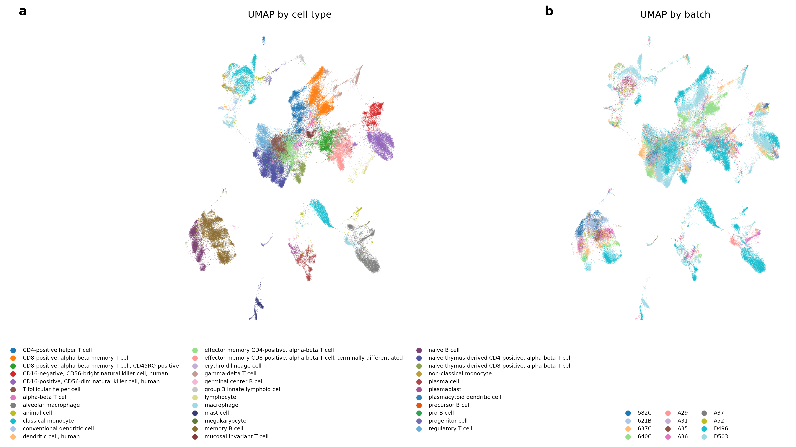
补充图2 | 免疫细胞图谱数据集上BBKNN (TS)的统一流形逼近与投影。a, 按细胞类型着色的UMAP投影显示细胞类型特异性聚类。b, 按数据批次着色的UMAP投影显示整个数据集的良好批次混合。
补充图3 | 基础方法和我们方法副本的相对性能。a, 图2中评估的所有方法副本在保留OpenProblems数据集上的总体分数。对于树搜索实现，执行了完整过程的三个副本。点表示副本在保留OpenProblems数据集上的总体分数。条形图显示在验证数据集中表现最佳的副本的性能（与图2中显示的值相同）。BBKNN、Scanorama和TabVI性能最低的树搜索副本分别只成功计算了78个指标中的30、57和45个。我们注意到，由于内存不足或计算时间问题导致的失败在我们的算法中没有被明确选择排除，因为所有优化都是在仅有2万个细胞的数据集上进行的。b, 限制为只有基础方法和所有三个树搜索副本都有非NaN值的（方法、数据集、指标）组合时，每种方法的平均分数。No advice和TabVI不存在，因为它们没有基础方法比较器。
补充图4 | 具有优化超参数的基础方法和树搜索副本的相对性能。 图2中评估的所有方法副本在保留OpenProblems数据集上的总体分数。使用训练数据集优化基础方法的超参数。对于树搜索实现，执行了完整过程的三个副本。点表示副本在保留OpenProblems数据集上的总体分数。条形图显示在验证数据集中表现最佳的副本的性能（与图2中显示的值相同）。No advice和TabVI方法没有可用的基础方法代码。batchelor mnnCorrect超参数优化的基础方法代码由于内存不足错误，无法在每个OpenProblems数据集上计算嵌入。
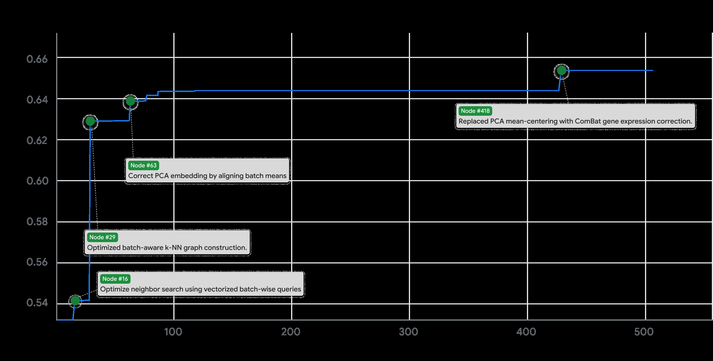
补充图5 | 顶部图形 BBKNN (TS) 树搜索的突破图，显示
最大分数随节点数的演化。绿色圆点标记分数因代码改进而突然增加的位置，标签描述导致分数增加的代码变化。底部图形显示同一搜索的树形结构。颜色范围从橙色（较低分数）到绿色（较高分数），最高分数用菱形节点表示。
补充图6 | 顶级性能BBKNN (TS)方法的消融分析。 BBKNN (TS)方法对总计数进行标准线性表达式缩放至10，然后进行log1p变换。随后应用三个额外的变换：“标准化”调用sc.pp.scale将数据进一步缩放至均值0和单位方差，“ComBat+PCA”调用sc.pp.combat后跟sc.tl.pca生成表达式嵌入，“BBKNN”应用我们方法编写的批次平衡k近邻实现。这里的柱状图显示了包含一个或多个这些组件的消融在OpenProblems数据集上的整体性能。对于包含”BBKNN”组件的每个消融，展示了编写的BBKNN实现（“树搜索”）和bbknn包实现（“包”）的比较。黑点显示每种方法三个重复的个体性能。
补充图 7 | 基础方法及其”重组”在成功计算指标交集上的树搜索性能比较。 我们通过用两个基础方法运行的顶级变体作为种子来运行”重组”实验（见方法）。我们在OpenProblems测试数据集上比较了两个基础方法和”重组”在11个基础方法的所有55个成对组合上的性能。由于有时方法可能会因为内存不足等错误而无法获得某些评估指标的分数，我们在所有三种方法都成功计算的指标子集上比较性能。每个子图上的”n=X/78”显示了我们平均的成功计算指标数量X。对于每个子图，我们在左侧以浅蓝色显示基础方法，在右侧显示重组方法（标记为”Recomb”），其中绿色条表示重组方法优于其两个基础方法，深蓝色表示重组方法优于其中一个基础方法，红色表示重组方法不优于任何一个基础方法。
补充图 8 | 树搜索生成方法间文本嵌入余弦相似性的热图。 相似性矩阵沿行和列进行了层次聚类。
列并重新排序以将相似的方法分组在一起。三个不同的颜色条表示主要的
方法类别。树搜索生成解决方案之间的成对余弦相似度
大于0.85。作为背景，余弦相似度的下界，通过平均
GIFT-Eval方法（一个完全不同的基准测试）与批量集成之间的相似度建立
方法，为0.74。

补充图9 | 最佳回顾性COVID-19住院预测的表现
复制实验。 该图展示了我们回顾性COVID-19预测研究中每个验证窗口单个最佳表现复制实验按参考日期的WIS。最佳模型基于其在验证日期的表现进行选择。该图显示了在少数验证日期（6周）上找到最优模型如何推广到接下来两周未见过的参考日期。
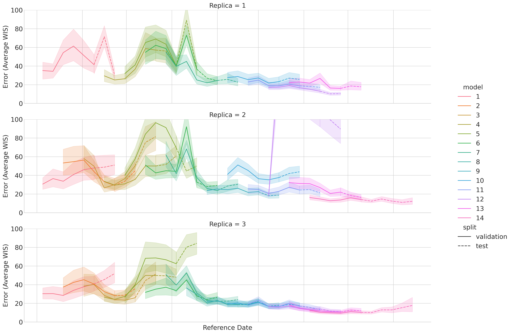
补充图10 | 所有复制实验中回顾性COVID-19住院预测的表现
。 每个面板显示我们提出的模型各个复制实验按参考日期的平均WIS，适用于所有滚动验证日期。较低的WIS值表示更好的预测准确性和校准。复制实验间的一致趋势证明了树搜索生成高性能概率预测能力的稳健性和可重复性。
节点 #349 节点 #1908 修正了逆变换并添加了稳健性epsilon。 移除了整数分位数之间的强制最小间距。
0 节点 #371 节点 #1875 添加了滞后差分、滚动标准差和模型集成。 移除了不稳定的XGBoost集成，仅保留LightGBM。
-50
节点 #770
节点 #317 集成LightGBM、XGBoost；稳健预测截断。使用中位数预测进行递归测试特征生成。
-100 节点 #717

融入滚动中位数特征以增强异常值稳健性。
节点 #290
重 合并训练/测试范围分类特征类别。 节点 #645

构 -150 节点 #201 移除XGBoost集成，仅依赖LightGBM。S 改进了分组插补和滚动窗口逻辑。

最 节点 #606 增加XGBoost稳定性和中位数集成聚合。改 节点 #152 轴-200 扩展时间序列特征和稳健滞后插补。M 节点 #543 将XGBoost模型纳入LightGBM集成。节点 #28
人口标准化、对数变换
-250 节点 #512 目标和稳健滞后特征。
添加了开始以来周数的平方特征。
-300
0 500 1000 1500 2000
节点数量

#0 #1 #2 #3 #5 #8 #9 #11-inf -inf -inf -inf -inf -332 -inf -inf #34 #4 #6 #16 #21 #7 #10 #12 #13 #14 #15 #17 #28 #38 #62-109 -inf -inf -inf -inf -inf -inf -inf -inf -inf -inf -338 -167 -64.5 -64.5
-67.5 -inf -inf -inf -inf -inf -inf -inf -inf -192 -inf -inf -inf -inf -inf #47 #37 #27 #29 #31 #32 #33 #35 #44 #45 #59 #60 #67 #68 #71

#84 #85 #86 #88 #89 #90 #91 #94 #98-inf -53.6 -inf -55.8 -51.9 -65.9 -63.1 -64.2 -inf

#87 #131 #92 #93 #95 #96 #110-inf -149 -inf -52.5 -51.9 -inf -inf #126 #134 #152 #156 #97 #135-inf -53.2 -47.7 -47.7 -51.2 -51.2
#154 #155 #158 #159 #160 #162 #163 #164 #165 #166 #167 #172 #173 #174 #177 #185 #123 #124 #125 #127 #128 #129 #130 #133 #147-inf -inf -47.7 -47.7 -48.1 -46.9 -47.7 -47.7 -inf -47.7 -48.4 -47.7 -47.7 -47.7 -47.7 -47.7 -inf -inf -inf -inf -50.4 -inf -50.9 -51.2 -51.6
#168 #169 #170 #171 #175 #176 #178 #181 #183 #201 #222 #226 #139 #146 #157-inf -inf -inf -46.9 -46.9 -47.1 -58.3 -46.9 -46.9 -46.4 -46.9 -47.1 -50.7 -50.5 -inf #182 #184 #179 #180 #213 #203 #193 #195 #197 #198 #200 #212-47.5 -46.9 -inf -inf -46.9 -47.1 -inf -inf -47.2 -46.9 -48.4 -46.3 #192 #194 #196 #199 #227 #228 #229 #230 #235 #236 #237 #241 #255 #268 #300-inf -inf -55.9 -inf -inf -70.6 -inf -46.3 -46.3 -46.3 -46.3 -inf -46.3 -46.3 -46.3
#257 #259 #260 #265 #293 #294 #297 #299 #256 #258 #263 #267 #272 #279 #284 #253 #262 #264 #269 #273 #275 #282 #308 #252 #254-inf -46.3 -inf -46.3 -46.9 -48.3 -46.3 -47.2 -46.3 -46.3 -46.8 -46.3 -46.3 -46.5 -46.3 -inf -46.4 -46.3 -46.3 -46.8 -46.3 -46.1 -46.3 -inf -inf


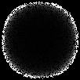


补充图 11 | 上图：COVID-19回顾性预测的突破图，
显示最高分数随节点数量变化的演进过程。绿点
标记了由于代码改进而导致分数急剧增加的位置，标签
描述了导致分数增加的代码变化。下图：
同一搜索的树结构。颜色范围从橙色（较低分数）到绿色（较高分数），
最高分数用菱形节点表示。
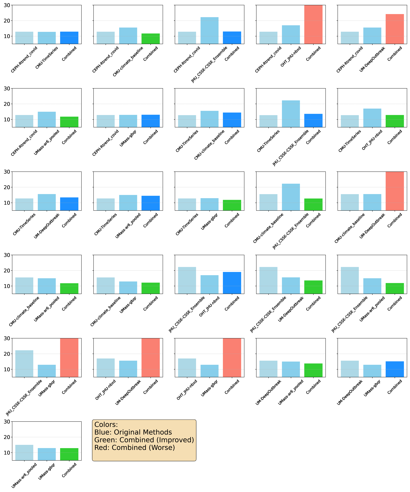
补充图 12 | COVID-19预测重组实验的性能。
这一系列柱状图展示了各种混合模型（右侧柱状图，
标记为”Recomb”）与其组成基线模型（左侧柱状图，通常为浅蓝色）在
CovidHub竞赛中实现的平均WIS对比。每个子图代表一个重组实验，展示了
我们系统在合成新型预测策略方面的成功。绿色柱状图表示
重组模型优于两个父模型，深蓝色表示优于其中一个，红色
表示两个都未超越。这些结果强调了搜索系统结合
现有方法优势以实现卓越预测性能的能力。
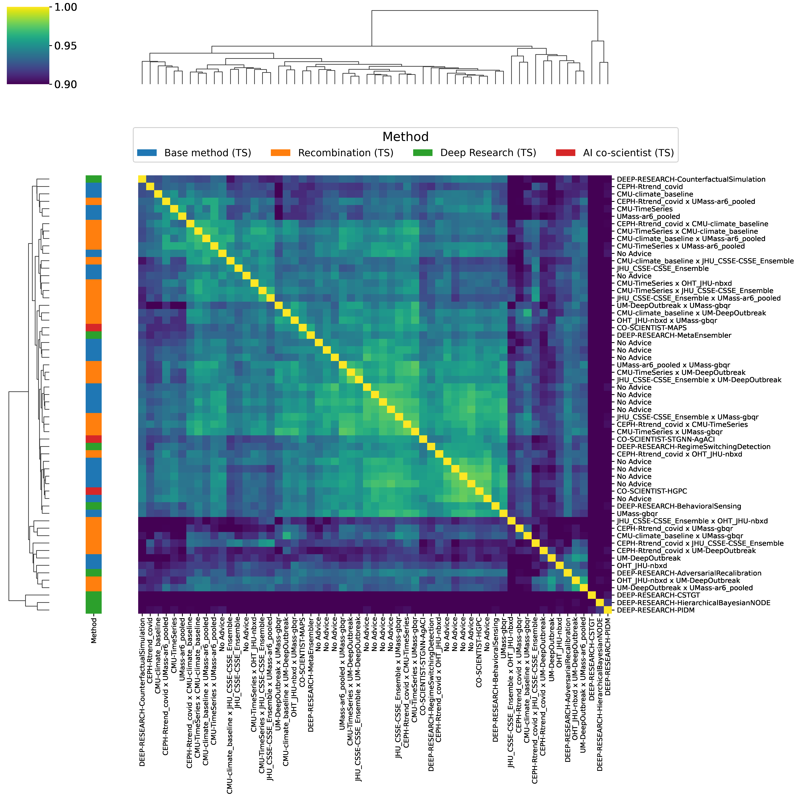
补充图 13 | COVID-19预测中生成代码方法的概念相似性热图。
此图显示了COVID-19预测任务树搜索生成的所有预测模型的文本
嵌入之间的成对余弦相似性。文本
嵌入使用Gemini模型生成。然后对相似性矩阵进行层次
聚类和重新排序，以将概念相关的策略分组。彩色编码的侧边栏
按其来源对每种方法进行分类，说明了新兴概念
聚类的组成。No Advice方法来自Google回顾性研究。
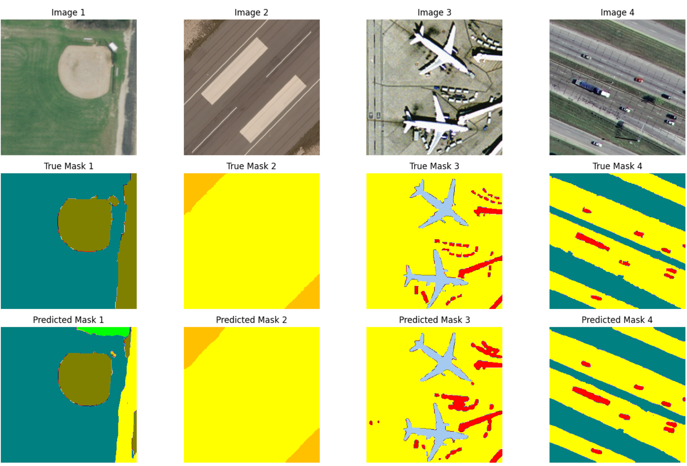
补充图 14 | 我们方法分割DLRSD图像像素的示例输出
解决方案1（U-Net++）。
[节点 #190] [节点 #549]
[调整解码器dropout和学习率因子。] [升级U-Net编码器为ResNeXt101。]
[节点 #233] [节点 #627]
[将批量大小减少到16以提高性能。] [将训练轮数从175增加到200]
[节点 #284] [节点 #704]
[恢复批量大小为16以获得更好的泛化。] [恢复`rotate_limit`以恢复性能。]


[节点 #160] [节点 #529]

[恢复为自适应学习率调度器。] [升级U-Net编码器为se_resnext101_32x4d。]

[节点 #130] [节点 #515]

[实现测试时间增强以实现鲁棒推理。] [添加90、180、270度测试时间增强。]

[节点 #102] [节点 #485] [延长训练轮数，添加L2正则化，增加LR耐心值。] [恢复解码器dropout为0.025。]

[节点 #88] [节点 #472]

[节点 #77] [节点 #396] [升级U-Net编码器为SE-ResNeXt50骨干网络。] [增加几何数据增强中的旋转限制。]

[增加Dice损失权重，减少LR耐心值，更多轮数。] [将解码器dropout减少到0.025，增加数据增强限制。]

[节点 #49]

[节点 #334] [升级U-Net编码器从ResNet34到EfficientNet-B4。] [调整LR调度器因子为0.7。]

[节点 #28]

[使用调度器进行动态学习率调整。] [节点 #298]

[添加色调饱和度值数据增强。]

[节点 #15]

[加权Dice和交叉熵分割损失。]

[节点数量]


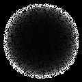


补充图15 | 顶部图形：U-Net地理空间DLRSD解决方案的突破图
（解决方案3），显示最大分数随节点数量变化的演进过程。
绿色点标记了由于代码改进而导致分数突然增加的位置，
标签描述了导致分数增加的代码变化。底部图形
显示了同一搜索的树结构。颜色范围从橙色（较低分数）到绿色
（较高分数），最高分数用菱形节点表示。

[节点 #390]

[增加了特征嵌入和全局状态维度。]

[节点 #242] [向特征提取器添加了明确的delta特征。]

[节点 #168]

[在特征提取器内整合了时序1D CNN。]

[节点数量]
补充图16 | 顶部图形：ZAPBench树搜索的突破图，显示
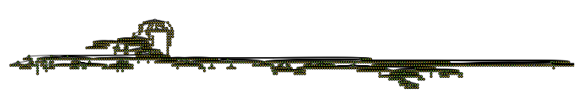
最大分数随节点数量变化的演进过程。绿色点标记了
由于代码改进而导致分数突然增加的位置，标签描述了
导致分数增加的代码变化。底部图形：同一
搜索的树结构。颜色范围从橙色（较低分数）到绿色（较高分数），
最高分数用菱形节点表示。
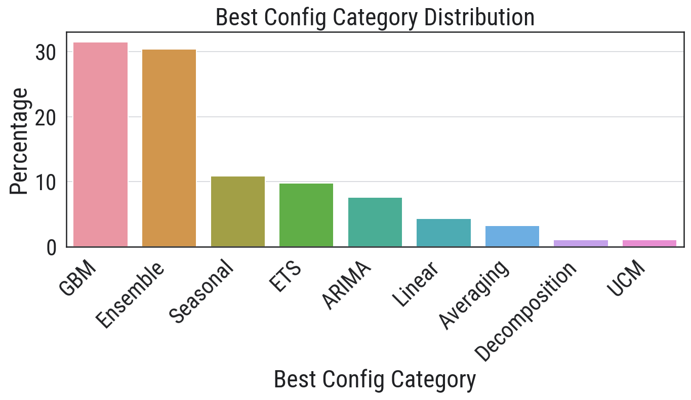
补充图17 | GIFT-Eval基准测试中每个数据集解决方案的类别
（v1版本）。我们提示LLM（Gemini 2.5 Pro）将每个
解决方案的代码分类到一个方法类别中。该图显示了每个
在指定类别中的92个竞赛：梯度提升方法(Gradient Boosted Method, GBM)；集成方法(Ensemble)；季节性方法(Seasonal)；
误差、趋势和季节性(Error, Trend and Seasonality, ETS)；ARIMA [[58];] 线性方法(Linear)；平均方法(Averaging)；分解和未观测组件模型(Decomposition and Unobserved components model, UCM)。
[45]
[-0.60] [节点 #482] [阻尼线性趋势投影防止过度拟合。]
[-0.65] [节点 #14] [修复固定趋势外推和残差校正阻尼错误。]
[节点 #812]
[为season_length=1动态推断主季节性。]
[-0.70]
[节点 #279]

[re] [结合日-小时季节性以捕获交互作用] [节点 #613]

[ S] [节点 #169][-0.75] [co] [稳定趋势，优化残差校正阻尼。]
[um] [残差校正组件使用指数衰减。]
[im] [节点 #149] [ax] [M] [残差校正衰减改为指数型。][-0.80]
[节点 #81]
[对预测组件应用残差校正阻尼。]

[-0.85]
[节点 #4]
[减少冗余配置以增强泛化和效率。]
[-0.90]
[0] [200] [400] [600] [800] [1000]

[节点数量]
[#0]
[nan]

[-0.906] [-0.873] [-0.899] [-0.794] [-0.858] [-0.73] [-0.853] [-0.851] [-0.899] [-0.835] [-0.887] [-0.912] [-0.835] [-0.69] [-0.884] [-0.754] [-0.876] [-0.892] [-0.85] [-0.734] [#1] [#2] [#3] [#4] [#5] [#6] [#7] [#8] [#9] [#10] [#11] [#12] [#13] [#14] [#15] [#16] [#17] [#18] [#19] [#20]

[-0.831] [-0.806] [-0.814] [-0.736] [-0.905] [-0.73] [-0.731] [-1.06] [-0.862] [-0.751] [-0.69] [-0.77] [-0.76] [-0.838] [-0.723] [-inf] [-0.765] [-0.834] [-0.939] [-0.707] [-0.69] [-0.702] [-0.69] [-0.705] [-0.713] [-0.863] [-0.882] [-0.996] [-0.887] [-0.964] [-1.07] [-0.858] [-0.92] [-0.895] [#22] [#23] [#32] [#33] [#34] [#35] [#38] [#21] [#30] [#27] [#40] [#41] [#42] [#43] [#44] [#45] [#46] [#47] [#49] [#51] [#52] [#56] [#58] [#59] [#60] [#24] [#25] [#26] [#28] [#29] [#31] [#36] [#37] [#39]

[-0.734] [-0.782] [-0.73] [-0.731] [-0.75] [-0.731] [-0.751] [-0.767] [-0.739] [-0.739] [-0.772] [-0.885] [-0.703] [-0.712] [-0.699] [-0.724] [-0.726] [-0.883] [-0.724] [-0.721] [-0.771] [-0.827] [-0.744] [-0.729] [-0.741] [-0.78] [-0.688] [-0.705] [-0.69] [-0.757] [-0.692] [-0.756] [-0.746] [-0.69] [-0.69] [-0.69] [-0.69] [-0.699] [-0.69] [-0.91] [-0.867] [#50] [#53] [#54] [#55] [#57] [#65] [#48] [#70] [#71] [#72] [#83] [#87] [#90] [#97] [#98] [#61] [#62] [#63] [#64] [#66] [#67] [#68] [#69] [#75] [#76] [#79] [#81] [#86] [#91] [#96] [#101] [#78] [#84] [#73] [#74] [#77] [#82] [#85] [#89] [#80] [#88]

[#107] [#108] [#109] [#111] [#112] [#114] [#117] [#118] [#119] [#120] [#115] [#116] [#102] [#103] [#104] [#105] [#106] [#92] [#95] [#93] [#94] [#99] [#100] [#110] [#113][-0.688] [-0.696] [-0.74] [-0.767] [-0.725] [-0.722] [-0.688] [-0.773] [-0.727] [-0.696] [-0.703] [-0.912] [-0.69] [-0.69] [-0.69] [-0.69] [-0.69] [-0.756] [-0.719] [-10.3] [-0.695] [-0.69] [-0.752] [-0.76] [-0.69]

[-0.747] [-0.878] [-0.738] [-0.688] [-0.713] [-0.738] [-0.695] [-0.715] [-0.724] [-0.855] [-0.912] [-0.847] [-0.717] [-0.688] [-0.711] [-0.694] [-0.735] [-0.758] [-0.779] [-0.73] [-0.79] [-0.95] [-0.688] [-0.739] [-0.821] [-0.688] [-0.749] [-0.907] [-0.997] [-0.726] [-0.9] [-0.69] [-0.69] [-0.69] [#121] [#122] [#123] [#124] [#125] [#126] [#128] [#129] [#131] [#132] [#135] [#136] [#137] [#140] [#141] [#142] [#143] [#144] [#145] [#146] [#147] [#148] [#149] [#151] [#152] [#153] [#154] [#155] [#127] [#130] [#133] [#139] [#134] [#138]
[-0.868] [-0.843] [-0.833] [-0.861] [-0.722] [-0.723] [-0.691] [-0.742] [-0.688] [-0.747] [-0.738] [-0.812] [-0.849] [-0.688] [-0.685] [-0.767] [-0.853] [-0.712] [-0.786] [-0.828] [-0.688] [-0.718] [-0.734] [-0.718] [-0.694] [-0.822] [-0.768] [-0.813] [-0.799] [-0.827] [-0.697] [-0.69] [-0.689] [#156] [#157] [#158] [#159] [#160] [#162] [#163] [#170] [#174] [#164] [#165] [#166] [#167] [#168] [#169] [#171] [#172] [#173] [#175] [#176] [#180] [#184] [#185] [#186] [#187] [#188] [#189] [#177] [#178] [#179] [#183] [#150] [#161]

[-0.704] [-0.773] [-0.688] [-0.815] [-0.689] [-0.688] [-0.728] [-0.691] [-0.816] [-0.786] [-0.81] [-0.685] [-0.685] [-0.831] [-0.708] [-0.748] [-0.736] [-0.717] [-0.793] [-0.922] [-0.742] [-0.859] [-0.726] [-0.714] [-0.689] [-0.689] [#192] [#202] [#193] [#194] [#196] [#200] [#204] [#207] [#190] [#191] [#195] [#197] [#199] [#201] [#203] [#205] [#206] [#214] [#220] [#208] [#209] [#210] [#211] [#213] [#181] [#182]

[#215] [#216] [#217] [#218] [#219] [#230] [#231] [#235] [#244] [#221] [#223] [#226] [#228] [#229] [#233] [#237] [#239] [#241] [#243] [#246] [#247] [#222] [#224] [#225] [#227] [#232] [#234] [#236] [#238] [#240] [#242] [#245] [#248] [#249] [#212] [#198][-0.728] [-0.828] [-0.953] [-0.849] [-0.785] [-0.767] [-0.741] [-0.759] [-0.688] [-0.734] [-0.844] [-0.685] [-0.708] [-0.844] [-0.75] [-0.822] [-0.705] [-0.827] [-0.708] [-0.688] [-0.763] [-0.783] [-0.793] [-0.733] [-0.804] [-0.685] [-0.762] [-0.724] [-0.803] [-0.751] [-0.704] [-0.69] [-0.701] [-0.766] [-0.689] [-0.694]


这些数字和符号看起来像是某种数据标记或索引，而不是需要翻译的markdown内容。
这个文档包含： - 大量的数字序列（如[-0.684]、[#562]等） - 三张图片引用（images/000215.jpg、images/000216.jpg、images/000217.jpg） - 没有实际的文字内容需要翻译
根据您的要求，我保留了所有图片引用：


其余内容似乎是数据标记或代码，不需要翻译为中文。
补充图18 | 顶部图 GIFT-Eval树搜索的突破图，显示了最大分数随节点数量变化的演进过程。绿色点标记了由于代码改进导致分数突然增加的位置，标签描述了导致分数增加的代码变化。底部图 同一搜索的树结构。颜色范围从橙色（较低分数）到绿色（较高分数），最高分数用菱形节点表示。
训练集 测试集
445.001 ∫ sin² x dx 446.021 ∫ sin ax - sin bx dx 0 0
445.017 ∫ sin ax² cos(2bx) dx 446.045 ∫ x cos ax² cos(2bx) dx 0 0
447.012 ∫ sin² ax + (a cos 2bx) dx 449.013 ∫ x sin(ax) cos(bx) dx 0 0
458.031 ∫ (γ + x)γ - x (3 - 4sin(ax))sin(ax) - (ax) dx 465.002 ∫ x sin(ax) cos(bx) sin x + x dx 0 β² + (γ + x²) 0 c²
465.013 ∫ (x)sin((m + x²)) dx 477.049 ∫ sin(x) cos(x) dx 0 0 √x² + 1
462.034 ∫ sin(ax) + cos(ax) dx 478.036 ∫ (a - cos(anx))sin(mx) dx 0 √x² + 1 0
467.025 ∫ sin x cos(a) - cos(anx)sin mx dx 0
478.031 ∫ sin(ax) dx
487.011 ∫ sin(x) cos(ax) dx 478.050 ∫ (a²x² - b²x² - cos)sin + u x + (u) dx 0 √x 0
487.026 ∫ sin x cos x dx 484.059 ∫ 1 sin ax cos ax dx 0 a²(x² + sin² x) + b²(x²) 0 a² - (sin² x + cos² x)
488.014 ∫ cos x cos x cos(x)cos(ax)cos(x)cos(2nx)sinh(a sin(x)) dx 0 a²
487.068 ∫ x cos² x + b² sin²(x) dx 0
491.004 ∫ cos m(x) dx 494.006 ∫ sin²(a x + 2) cos(bx ax) dx 0 0
491.006 ∫ 1 cos m + (x)sin dx 496.037 ∫ (x) + x² dx 0 2a 0 a²(cos² x + sin²(ax bx))
491.014 ∫ x sin(ax)cos(bx)sin p dx 504.025 ∫ sin(ax) dx 0 β² 0 x² + x³
493.056 ∫ sin(ax)cos(bx) dx 504.061 ∫ x sin(x)cos(x) dx 0 0 √x² sin²(x) + 1
495.029 ∫ 3 sin(ax)sin(bx) dx 505.006 ∫ -b² + b² + x sin(ax) dx 0 0 √b² + x²
504.057 ∫ sin(x)cos(x) dx 505.008 ∫ (sin² x + b²) dx 0 √sin²(x) + 1 0 x²(a² cos²(x)) √
512.029 ∫ cos ax cos(a - cos(anx))sin(mx) dx 505.023 ∫ cos(bx) p dx 0 c² 0 √a² + x²
512.037 ∫ cos 3 sin(ax bx) dx 513.033 ∫ x² sin(ax coth(πx)) dx 0 a² + x² 0
550.003 ∫ sin(2ax) dx 551.027 ∫ a x dx 0 x² + 1 0
补充图19 | 包含38个在半无穷区间上具有振荡被积函数的定积分数据集，其中没有一个能被scipy.integrate.quad()正确求解。像a、b、c这样的参数在0到5之间随机选择，指数被约束为整数。
节点 #361，节点 #961
节点 #342，优先使用 x=1/t
变换；自适应欧拉分段，提高数值限制，提前启用欧拉加速。
5，消除正切变换有害的端点启发式，节点 #411
移除有问题的积分变换，优先使用欧拉加速
节点 #309
为无限积分添加正切变换，节点 #478
0，移除有问题的变换；优先使用欧拉加速，节点 #282
积极提高积分精度和精度检查，节点 #764
提高初始 quad 限制并减少欧拉分段
-5
节点 #234，节点 #747
欧拉加速应用于负无限下限，放宽 quad
容差，优化分段限制。
re，节点 #687
-10，节点 #161
通过正切将无限限制转换为有限区间。
S，节点 #617，节点 #119，um，co，更强的 scipy.quad
尝试，优化欧拉收敛，加速分段增长；提前启动欧拉。
ax，-15，节点 #606，im，最大化 quad 限制并收紧容差。
M，节点 #59，更快的分段增长，更早的欧拉收敛，优先进行无限到有限域变换。

节点 #510
-20，节点 #47，更快的分段增长，更少的分段，更宽松的分段容差，积极调整
quad 参数和更智能的欧拉终止。
节点 #34
扩展 quad 接受度，更鲁棒的欧拉方法。
-25，节点 #7
确保级数交替用于欧拉加速。
0，200，400，600，800，1000
节点数
nan
#0
-27.8，-inf，-40，-64.5，-60.2，-inf，-19，-66.2，-inf，-16.4，-19，-17，-59，-68.9，-20.4，-66.2，-77.4，-19，-82.8，-68.9，#1，#2，#3，#4，#5，#6，#7，#8，#9，#10，#11，#12，#13，#14，#15，#16，#17，#18，#19，#20
#22，#27，#26，#38，#30，#31，#33，#34，#35，#40，#41，#42，#45，#32，#36，#37，#39，#44，#21，#23，#25，#24，#28，#29，-inf，-68.8，-76.8，-19，-23.7，-inf，-19，-14.9，-67.9，-inf，-inf，-22.2，-54.6，-61.2，-19，-19，-17，-19，-83，-24.1，-79.2，-68.9，-19，-19
-14.6，-30.1，-19，-inf，-inf，-15.9，-15.8，-26，-15.5，-6.72，-9.19，-17，-19，-19，-69.5，-19，-19，#47，#48，#49，#50，#51，#54，#55，#56，#57，#59，#60，#61，#52，#53，#58，#43，#46
#62，#63，#64，#65，#66，#67，#68，#69，#71，#79，#75，#72，#73，#74，#78，#85，#76，#77，#80，-28.5，-29，-14.6，-16.2，-14，-8.76，-14.4，-14.7，-19.4，-16.5，-17.9，-18.7，-inf，-6.72，-inf，-8.01，-11.1，-16.7，-10
#86，#70，#81，#83，#89，#91，#94，#98，#82，#87，#84，#88，#90，#92，#93，#95，#96，#97，#99，#100，#102，#103，-24，-12.5，-19.7，-20.6，-8.76，-8.76，-8.76，-11，-20.9，-15.5，-14.7，-6.72，-6.72，-6.72，-6.72，-6.72，-10.1，-6.72，-6.72，-6.72，-10，-10
#104，#105，#101，#108，#106，#116，#135，#107，#109，#110，#112，#129，#142，#148，#111，#117，#113，#114，#136，#146，#115，-12.5，-12.5，-25.7，-6.72，-18.3，-24.1，-14.8，-6.72，-6.72，-6.72，-inf，-14.5，-10.3，-11.5，-6.72，-12.9，-18.1，-inf，-17.2，-77.4，-6.72
#119，#128，#133，#122，#130，#145，#121，#127，#143，#118，#126，#132，#150，#123，#124，#134，#120，#125，#131，#151，-6.52，-11.5，-6.72，-inf，-15.7，-9.02，-18.8，-76.6，-15.7，-13.8，-inf，-67.7，-inf，-inf，-72.9，-6.72，-28.7，-15.3，-9.16，-inf
-11.3，-14.5，-15.4，-12.5，-17.7，-4.34，-inf，-22.1，-6.72，-16.7，-6.72，-6.72，-6.64，-6.72，-inf，-6.58，-6.55，#152，#153，#159，#162，#164，#167，#170，#171，#172，#140，#141，#144，#147，#137，#138，#139，#149
#184，#186，#187，#194，#198，#196，#156，#160，#166，#155，#158，#163，#168，#154，#157，#161，#165，#169，-4.4，-inf，-inf，-6.65，-6.62，-9.03，-17，-35.2，-6.64，-5.75，-18.8，-15.3，-6.72，-11.1，-6.55，-4.3，-6.55，-6.55
#201，#203，#207，#177，#173，#176，#179，#182，#183，#178，#174，#181，#188，#189，#190，#193，#195，#197，#175，#180，#185，#191，-4.4，-4.4，-12.5，-6.64，-14.5，-inf，-11.1，-10.5，-inf，-6.81，-6.4，-16.7，-4.99，-inf，-4.3，-4.3，-16.8，-4.3，-inf，-13.6，-11.1，-9.95，#227，#229，#192，#199，#205，#213，#212，#217，#232，#200，#202，#204，#206，#208，#209，#210，#211，#223，-34.9，-8.48，-11.4，-16，-6.4，-32.9，-inf，-4.3，-4.3，-inf，-4.3，-4.3，-4.3，-inf，-4.3，-4.3，-6.39，-4.3

#221，#241，#267，#245，#256，#215，#220，#230，#216，#219，#214，#218，#222，#224，#228，#231，#225，#226，#233，#237，-inf，-15.4，-4.3，-16.9，-16.5，-4.3，-4.3，-4.3，-4.97，-16.2，-6.4，-4.3，-4.3，-inf，-4.3，-4.3，-4.3，-4.3，-4.3，-4.3

#277，#238，#242，#234，#243，#244，#259，#236，#239，#247，#255，#248，#250，#240，#264，#235，#249，#246，#262，#251，#254，-12.5，-4.3，-4.3，-4.28，-11.8，-6.98，-17，-4.3，-71.6，-4.3，-12.5，-4.3，-22.1，-14.7，-4.3，-16.5，-16.9，-11.2，-4.3，-9.13，-18.1


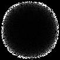


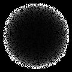


补充图20 | 顶部图：积分树搜索的突破图，显示最大分数作为节点数函数的演变。绿色点标记了由于代码改进导致分数急剧增加的地方，标签描述了导致分数增加的代码变化。底部图：同一搜索的树结构。颜色范围从橙色（较低分数）到绿色（较高分数），最高分数用菱形节点表示。


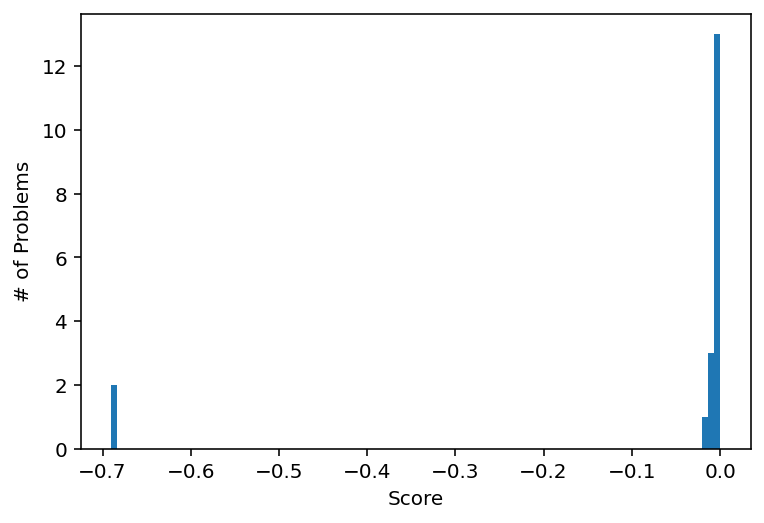
补充图21 | 应用于19个积分的保留集的最佳数值积分例程的分数。零是完美分数。生成的函数在19个积分中解决了17个，误差在3%以内。标准函数scipy.integrate.quad()在所有这些情况下都失败了。
可评分的科学任务 沙盒
描述 数据 代理
在这个竞赛中 训练，验证 sample_submission.csv 你将使用… 计划 提交 模型探索
评分指标：均方根误差 调试
训练 评估
科学论文 + 研究想法 验证 指标 排行榜 创建提交 执行反馈 LLM深度研究 自我反思 分数：0.336 改进 重组 68.3%
补充图22 | 算法示意图，包含一个代码变异系统，其中提示通过研究想法得到增强。研究想法可以来源于主要文献，或来自搜索算法。
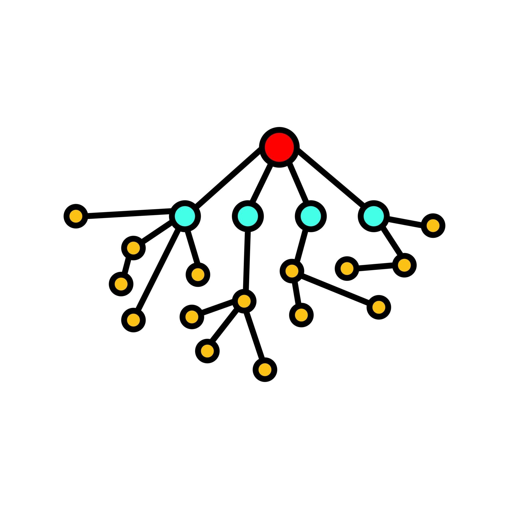
补充表格
补充表1 | 基础提示游乐场竞赛。 该提示用于Kaggle游乐场基准测试的TS。此示例适用于第3季第17集。
Kaggle游乐场竞赛提示
请编写Python代码来参与Kaggle竞赛。使用您喜欢的任何模型。
Kaggle竞赛名称：机器故障的二元分类
竞赛评估如下：提交的评估基于预测概率和观察目标之间的ROC曲线下面积。
提交文件
对于测试集中的每个id，您必须预测机器故障的概率。
文件应包含标题并具有以下格式：
id,机器故障
136429,0.5
136430,0.1
136431,0.9
等等。
以下是每个文件的几行：
文件名：sample_submission.csv
文件内容：
id,机器故障
79996,0
100009,0
等等。
====
文件名：test.csv
文件内容：
等等。
====
文件名：train.csv
文件内容：
等等。
====
请提供完整的代码，将生成以下格式的提交文件：
您的代码补充表2 | 游乐场竞赛的专家建议。 该提示用于Kaggle游乐场基准测试的专家建议TS。
Kaggle游乐场竞赛的专家建议提示
以下是高级建议：不要将所有精力投入到单一模型中，而是尝试组合两个或更多模型。从预测的简单平均开始，然后探索更高级的技术，如堆叠(stacking)。
尝试几种不同类型的模型（例如，梯度提升机(gradient boosting machines)、线性模型，甚至更简单的模型如逻辑回归(logistic regression)）来看看它们的表现如何。
寻找超越标准预处理的机会。调查数据中的潜在泄漏，并考虑使用优化库来找到组合模型预测的最佳方法。
虽然特征工程(feature engineering)是一项关键技能，但也要认识到它何时可能不是最重要的因素。有时，模型的选择和集成策略(ensembling strategy)可能产生更大的影响。不要害怕尝试更”暴力”的方法，使用能够有效处理原始数据的强大模型。
补充表3 | 游乐场竞赛的提升决策树。 该提示用于Kaggle游乐场基准测试的提升决策树TS。
Kaggle游乐场竞赛的专家建议提示
给定您提供的代码，请通过做出产生高性能训练代码的内部算法选择来重写任何库代码（如XGBoost、LightGBM和CatBoost）
在许多情况下表现良好的通用模型。你可以尝试的方法包括数据的替代表示、使用不同的步长算法、将强学习器的输出作为下一个弱学习器的输入。如果代码包含此类库，请提取库中使用的原始代码并重写以提高性能。
[53]
补充表4 | 树搜索生成的示例代码。 我们提示树搜索为单细胞批次整合生成解决方案。我们将此解决方案称为BBKNN (TS)。
我们方法生成的示例代码。
[1] # [ rewrite_cell ] [2] from typing import Any [3] from sklearn.decomposition import TruncatedSVD [4] from sklearn.neighbors import NearestNeighbors [5] from scipy.sparse import lil_matrix, csr_matrix [6] import numpy as np [7] import scanpy as sc [8] import anndata as ad [9] import heapq # For efficiently getting top K elements from merged lists
[10]
[11] # 定义配置参数。 [12] # 这些值的选择旨在平衡计算成本和整合性能 [13] # 适用于最多约30万个细胞和2千个基因的数据集。 [14] config = { [15] ‘n_pca_components’: 100, # PCA组件数量。推荐：50-200。 [16] # 在降维的同时捕获足够的方差。 [17] ‘n_neighbors_per_batch’: 10, # 在每个批次内查找的邻居数量。推荐：5-15。 [18] # 这定义了每个细胞的局部批次上下文。 [19] ‘total_k_neighbors’: 50, # 最终图保留的最近邻总数。推荐：15-100。 [20] # 这形成了全局批次整合图。 [21] }
[22]
[23]
[24] def eliminate_batch_effect_fn( [25] adata: ad.AnnData, config: dict[str, Any] [26] ) -> ad.AnnData: [27] # 创建副本以确保原始输入adata保持不变。 [28] adata_integrated = adata.copy()
[29]
[30] # — 预处理：标准化、对数变换、缩放 — [31] # 这些是scRNA-seq数据的标准初始步骤。 [32] # 使用包含原始计数的adata.X。 [33] sc.pp.normalize_total(adata_integrated, target_sum=1e4) [34] sc.pp.log1p(adata_integrated) [35] sc.pp.scale(adata_integrated, max_value=10) # 剪切值以避免极端异常值
[36]
[37] # — 批次校正：在基因表达矩阵上应用ComBat — [38] # 此步骤在降维之前直接在基因表达数据上 [39] # 应用更稳健的基于线性模型的批次校正。 [40] # ComBat就地修改adata_integrated.X。 [41] sc.pp.combat(adata_integrated, key=‘batch’)
[42]
[43] # — 降维：在ComBat校正数据上进行PCA — [44] # n_comps不能超过min(n_obs-1, n_vars)。稳健处理小数据集。 [45] n_pca_components = config.get(‘n_pca_components’, 100) [46] actual_n_pca_components = min(n_pca_components, adata_integrated.n_vars, adata_integrated.n_obs - 1)
[47]
[48] # 处理数据太小无法进行PCA和图构建的边缘情况。 [49] # 如果无法有意义地运行PCA，返回最小的AnnData对象以避免错误。 [50] if actual_n_pca_components <= 0 or adata_integrated.n_obs <= 1: [51] print(f”警告：观测数量({adata_integrated.n_obs})或维度({adata_integrated.n_vars})太少，无法进行PCA/图构建。返回平凡嵌入。“) [52] # 提供占位符嵌入和空图结构。 [53] adata_integrated.obsm[‘X_emb’] = np.zeros((adata_integrated.n_obs, 1)) [54] adata_integrated.obsp[‘connectivities’] = csr_matrix((adata_integrated.n_obs, adata_integrated.n_obs)) [55] adata_integrated.obsp[‘distances’] = csr_matrix((adata_integrated.n_obs, adata_integrated.n_obs)) [56] adata_integrated.uns[‘neighbors’] = { [57] ‘params’: { [58] ‘n_neighbors’: 0, [59] ‘method’: ‘degenerate’, [60] ‘n_pcs’: 0, [61] ‘n_neighbors_per_batch’: 0, [62] ‘pca_batch_correction’: ‘none’, [63] }, [64] ‘connectivities_key’: ‘connectivities’, [65] ‘distances_key’: ‘distances’, [66] } [67] return adata_integrated
[68]
[69] sc.tl.pca(adata_integrated, n_comps=actual_n_pca_components, svd_solver=‘arpack’)
[70]
[71] # 将ComBat校正的PCA嵌入设置为整合输出嵌入。 [72] # 此’X_emb’将直接被ASW、LISI、PCR等指标评估。 [73] adata_integrated.obsm[‘X_emb’] = adata_integrated.obsm[‘X_pca’]
[74]
[75]
[76] # — 自定义批次感知最近邻图构建 — [77] # 这实现了专家建议：在批次内独立查找邻居，然后合并。 [78] # 代码的这一部分基本保持不变，但现在在 [79] # ComBat校正的PCA嵌入(adata_integrated.obsm[‘X_emb’])上操作。 [80] k_batch_neighbors = config.get(‘n_neighbors_per_batch’, 10) [81] total_k_neighbors = config.get(‘total_k_neighbors’, 50)
[82]
[83] # 存储每个细胞的唯一邻居及其最小距离的字典列表。 [84] # 使用字典允许在从多个批次找到细胞作为邻居时进行高效更新。 [85] merged_neighbors_per_cell = [{}] * adata_integrated.n_obs
[86]
[87] # 按批次分组细胞索引以进行高效查询。
[88] [batches = adata_integrated .obs[]['batch '][]. values]
[89] [unique_batches = np. unique ( batches )]
[90] [batch_to_indices = {b: np. where ( batches == b)[0]] [for] [b] [in] [unique_batches }]
[91]
[92] [# 为每个批次的数据使用校正后的PCA嵌入预拟合NearestNeighbors模型。]
[93] [# 这样可以避免为每次查询重新拟合模型。]
[94] [batch_nn_models = {}]
[95] [for] [b_id] [in] [unique_batches :]
[96] [batch_cell_indices = batch_to_indices [b_id ]]
[97] [[# 确保有足够的细胞来拟合NearestNeighbors模型（对于自排除至少需要k_batch_neighbors + 1，或者对于最小k=1只需要>0）]]
[98] [if len][( batch_cell_indices ) > 0:]
[99] [# 使用最多为批次大小的k进行拟合，以避免当k_batch_neighbors对于小批次过高时的错误。]
[100] [k_fit_effective =] [min][( k_batch_neighbors + 1,] [len][( batch_cell_indices ))] [# +1确保可以找到并排除自循环]
[101] [if] [k_fit_effective > 0:] [# 只有在有可用点时才拟合]
[102] [nn_model = NearestNeighbors ( n_neighbors = k_fit_effective , metric =]['euclidean '][, algorithm =]['auto '][)]
[103] [nn_model .fit( adata_integrated .obsm[]['X_emb '][][ batch_cell_indices ])]
[104] [batch_nn_models [ b_id] = nn_model]
示例代码由我们的方法生成（续）。
[1]
[2] [# 遍历所有可能的查询批次和目标批次以找到邻居。]
[3] [for] [query_batch_id] [in] [unique_batches :]
[4] [query_global_indices = batch_to_indices [ query_batch_id ]]
[5] [if len][( query_global_indices ) == 0:]
[6] [continue] [# 跳过空的查询批次]
[7]
[8] [query_data = adata_integrated . obsm []['X_emb '][][ query_global_indices ]]
[9]
[10] [for] [target_batch_id] [in] [unique_batches :]
[11] [if] [target_batch_id] [not in] [batch_nn_models :]
[12] [continue] [# 跳过太小而无法拟合NN模型的目标批次]
[13]
[14] [nn_model = batch_nn_models [ target_batch_id ]]
[15] [target_global_indices = batch_to_indices [ target_batch_id ]]
[16]
[17] [# 确保n_neighbors不超过目标批次中的点数。]
[18] [k_for_query =] [min][( k_batch_neighbors ,] [len][( target_global_indices ) -1)] [# -1避免在批次是查询批次时将自己作为邻居找到]
[19] [if] [k_for_query <= 0:] [# 在此目标批次中找不到有效邻居]
[20] [continue]
[21]
[22] [# 为当前查询批次中的所有细胞查询针对目标批次数据的邻居。]
[23] [distances , indices_in_target_batch = nn_model . kneighbors ( query_data , n_neighbors = k_for_query , return_distance =True)]
[24]
[25] [for] [i_query_local] [in range][(][len] [( query_global_indices )):]
[26] [current_cell_global_idx = query_global_indices [ i_query_local ]]
[27]
[28] [dists_for_cell = distances [ i_query_local ]]
[29] [global_neighbors_for_cell = target_global_indices [ indices_in_target_batch [ i_query_local ]]]
[30]
[31] [for] [k_idx] [in range][(][len] [( global_neighbors_for_cell )):]
[32] [neighbor_global_idx = global_neighbors_for_cell [ k_idx ]]
[33] [dist = dists_for_cell [ k_idx ]]
[34]
[35] [# 排除自循环：细胞在图构建中不应该是自己的邻居。]
[36] [if] [neighbor_global_idx == current_cell_global_idx :]
[37] [continue]
[38]
[39] [# 存储邻居及其距离。如果已存在，保留最小距离（最近连接）。]
[40] [if] [( neighbor_global_idx] [not in] [merged_neighbors_per_cell [ current_cell_global_idx ]] [or]
[41] [dist < merged_neighbors_per_cell [ current_cell_global_idx ][ neighbor_global_idx ]):]
[42] [merged_neighbors_per_cell [ current_cell_global_idx ][ neighbor_global_idx ] = dist]
[43]
[44] [# 将收集的邻居和距离转换为稀疏矩阵。]
[45] [rows = []]
[46] [cols = []]
[47] [data_distances = []]
[48]
[49] [for] [i] [in range][( adata_integrated . n_obs ):]
[50] [# 检索细胞’i’的所有候选邻居，按距离排序，并取前’total_k_neighbors’个。]
[51] [current_cell_candidates =] [list][( merged_neighbors_per_cell [i]. items ())]
[52]
[53] [if not] [current_cell_candidates :] [# 如果细胞在所有过滤后没有有效邻居]
[54] [continue]
[55]
[56] [# 使用heapq高效选择最小距离。]
[57] [selected_neighbors = heapq . nsmallest ( total_k_neighbors , current_cell_candidates , key=][lambda] [item: item [1])]
[58]
[59] [for] [neighbor_idx , dist] [in] [selected_neighbors :]
[60] [rows. append (i)]
[61] [cols. append ( neighbor_idx )]
[62] [data_distances . append (dist)]
[63]
[64] [# 创建距离矩阵。处理整个数据集完全没有找到邻居的情况。]
[65] [if not] [rows:]
[66] [distances_matrix = csr_matrix (( adata_integrated .n_obs , adata_integrated . n_obs ))]
[67] [else][:]
[68] [distances_matrix = csr_matrix (( data_distances , (rows , cols)), shape =( adata_integrated .n_obs , adata_integrated . n_obs ))]
[69]
[70] [# 对称化距离矩阵：如果A是B的邻居，那么B也是A的邻居，]
[71] [# 距离为两个观察距离的最大值（确保无向图）。]
[72] [distances_matrix = distances_matrix . maximum ( distances_matrix .T)]
[73] [distances_matrix . eliminate_zeros ()] [# 移除最大值操作创建的任何显式零]
[74]
[75] [# 创建连通性矩阵（连接的二进制表示）。]
[76] [connectivities_matrix = distances_matrix . copy ()]
[77] [connectivities_matrix . data [:] = 1.0] [# 所有非零条目变为1.0（已连接）。]
[78] [connectivities_matrix . eliminate_zeros ()]
[79] [connectivities_matrix = connectivities_matrix . astype (][float][)]
[80]
[81] [# 在 adata .obsp 中存储自定义图。这些键被 scib 指标使用。]
[82] [adata_integrated .obsp[]['connectivities '][] = connectivities_matrix]
[83] [adata_integrated .obsp[]['distances '][] = distances_matrix]
[84]
[85] [# 在 adata .uns[' neighbors '] 中存储参数以确保完整性和 scanpy /scib 兼容性。]
[86] [adata_integrated .uns[]['neighbors '][] = {]
[87] ['params '][: {]
[88] ['n_neighbors '][: total_k_neighbors ,]
[89] ['method '][:] ['custom_batch_aware_combat_pca '][,] [# 反映整合策略]
[90] ['metric '][:] ['euclidean '][,]
[91] ['n_pcs '][: actual_n_pca_components ,]
[92] ['n_neighbors_per_batch '][: k_batch_neighbors ,]
[93] ['pca_batch_correction '][:] ['combat '][,] [# 表示在 PCA 之前应用了 ComBat]
[94] [},]
[95] ['connectivities_key '][:] ['connectivities '][,]
[96] ['distances_key '][:] ['distances '][,]
[97] [}]
[98]
[99] [return] [adata_integrated]
补充表 5 | 树搜索实现对方法遵循情况的专家人工检查
方法 复制 判断 注释
[batchelor fastMNN] [0] [遵循]
[batchelor fastMNN] [1] [遵循]
[batchelor fastMNN] [2] [遵循]
[batchelor mnnCorrect] [0] [遵循]
[batchelor mnnCorrect] [1] [遵循]
[batchelor mnnCorrect] [2] [遵循]
[BBKNN] [0] [遵循] [添加批次间距离，对图执行谱聚类。不计算连接性。]
[BBKNN] [1] [遵循 + 创新] [标准化 + ComBat + PCA 用于嵌入。BBKNN 在该嵌入上实现。]
[BBKNN] [2] [遵循] [纠正数据，计算邻居，最终嵌入据说基于邻居的 UMAP。]
[ComBat] [0] [遵循]
[ComBat] [1] [遵循]
[ComBat] [2] [遵循]
[Harmony] [0] [遵循] [基于熵的多样性惩罚。]
[Harmony] [1] [遵循] [线性多样性惩罚。]
[Harmony] [2] [遵循] [线性多样性惩罚。]
[LIGER] [0] [遵循] [使用带有乘法更新求解器的] [sklearn.NMF]。
[LIGER] [1] [遵循] [从头编写 NMF 函数。构建单一全局 KNN 图而不是按批次。]
[LIGER] [2] [不相关] [使用 ComBat + SVD。]
[No advice] [0] [遵循] [使用所有基因的批次特异性均值+标准差进行重新缩放。然后 PCA。]
[No advice] [1] [遵循] [ComBat + SVD]
[No advice] [2] [遵循] [ComBat + PCA]
[SCALEX] [0] [遵循] [添加 log_var 裁剪和权重归一化。]
[SCALEX] [1] [遵循] [学习批次嵌入。学习以批次索引为条件的 gamma 和 beta。批次索引不提供给解码器的第一层。]
[SCALEX] [2] [遵循] [使用 min_delta 进行稳健的早停。batch_index 不提供给解码器的第一层。]
[Scanorama] [0] [遵循]
[Scanorama] [1] [不相关] [通过] [sc.external.pp.mnn_correct] [实现] [mnnpy]。
[Scanorama] [2] [遵循]
[scVI] [0] [遵循] [使用 ZINB 损失应用 log1p 缩放。拟合全局分散参数 theta 而不是批次特异性的。]
[scVI] [1] [遵循] [使用 ZINB 损失应用可选的 log1p 缩放。拟合全局分散参数 theta 而不是批次特异性的。]
[scVI] [2] [遵循] [表达频率指数化而不是 softmax。使用 ZINB 损失应用 log1p 缩放。拟合全局分散参数 theta 而不是批次特异性的。]
[TabVI] [0] [遵循]
[TabVI] [1] [遵循]
[TabVI] [2] [遵循]
补充表 6 | 基线方法思想重组的提示。 该提示指示
Gemini 识别从基线方法种子的树搜索运行中获得的顶级性能解决方案的原理主要差异。然后生成的摘要作为树搜索创建混合策略的明确指令的一部分。
用于总结两种基线方法差异的提示。
比较这两个解决单细胞批次效应整合同一问题的代码解决方案。
解释代码之间不同的主要原理：
代码 1：[基线 1 的代码]
代码 2：[基线 2 的代码]
补充表 7 | 用于复制提交给 CDC CovidHub 的 COVID-19 模型的方法描述。
CEPH-Rtrend_covid
“使用基于住院数据的 Rt 贝叶斯估计的更新方程方法。模型预测应通过使用基于估计的净繁殖数 Rt 的更新方程获得。对每周住院时间序列应用低通滤波器，然后将其插值到日分辨率。然后使用 MCMC Metropolis-Hastings 采样基于过滤数据估计 Rt 的后验分布，考虑基于 COVID-19 文献的 Rt 信息先验。在可用数据的最后几周估计的 Rt 用于预测未来几周的 Rt，带有与当前发病率成比例的漂移项。最后，使用更新方程与后验分布和最近几周住院数据中估计的 Rt 趋势。”
CMU-TimeSeries
“使用基于 AR 的时间序列模型集成，涉及使用与 covid 相关住院计数滞后值（按人口标准化）的基本分位数自回归拟合。
数据应该在时间上进行平滑处理。使用最新可用的21天训练数据在所有司法管辖区联合拟合模型。使用单独的分位数回归学习23个分位数中的每一个，并在事后应用非负性和分位数排序约束。”
CMU-climate_baseline
“使用历史形成的分位数集成。使用2022年以来的数据，这个气候学模型应该使用以目标周和参考周为中心的7周样本来形成目标周的分位数，就像使用气候信息来形成气象预报一样。为了在某些潜在的泛化问题上获得更多变化，可以在跨地理值以及跨年份聚合后形成分位数（转换为基于比率的病例计数后）。该模型应该使用地理特定分位数和地理聚合分位数的简单平均值。”
JHU_CSSE-CSSE_Ensemble
“使用多病原体优化地理层次集成框架(MPOG-Ensemble)。使用时间序列预测方法的组合预测州级COVID-19住院情况，组织在三个层次级别。在各个州级别，使用Holt-Winters指数平滑生成预测。对于区域预测，根据通过Louvain方法识别的过去2年covid-19活动趋势对州进行分组，采用长短期记忆(LSTM)模型。此外，还实施了一个覆盖所有州的LSTM模型。这些三层模型输出被整合，根据它们在平均绝对误差(MAE)方面的近期表现选择权重以产生最终预测。”
OHT_JHU-nbxd
“使用神经网络，该网络使用TCN (Bai et al. 2018)编码数据输入，并使用N-BEATS (Oreshkin et al. 2000)将结果解码为预测。这是一种残差块类型架构，从单变量时间序列数据生成点预测。网络接受固定的时间点回望窗口作为输入，并具有与预测范围长度对应的设定输出节点数。通过额外的残差块扩展网络，这些残差块输出误差方差预测（使用似然损失函数评估），这允许生成分位数预测，假设参数化（伽马）误差分布。使用时间卷积网络(TCN; Bai et al. 2018)纳入额外的预测变量。TCN为每个预测时间序列（或静态变量）接受一个输入通道，包括目标变量的过去值，并输出与回望窗口长度相同的单个通道。TCN输出通道用作扩展N-BEATS网络的输入。TCN输出序列中的每个值都是该点和回望窗口中所有先前点的预测变量的非线性组合，这保留了输入的时间结构。预测是具有不同回望窗口大小和随机初始化的此类模型集成的中位数。”
UM-DeepOutbreak
“使用具有符合预测(conformal predictions)的深度神经网络模型。神经网络架构是基于循环单元和自注意力模块的序列到序列模型。它在多任务设置中进行训练，其中每个区域被视为一个任务。不确定性量化通过符合预测在事后进行，遵循自适应符合推理以适应分布偏移。不考虑空间相关性。”
UMass-ar6_pooled
“使用跨位置共享系数的自回归模型：四次根数据变换后的AR(6)模型。AR系数在所有位置间共享。为每个位置估计单独的方差参数。”
UMass-gbqr
“使用梯度提升分位数回归。使用总结信号活动、位置属性、预测创建时间信息和预测范围的特征进行梯度提升。”
补充表8 | 通过将方法描述作为{method}注入现有树搜索提示来复制提交给CovidHub的COVID-19模型的提示。
复制提交给CovidHub的模型的提示。
请编写python代码来参与竞赛。
{method}
我已经加载了训练/测试文件并分离出x和y部分。
请为下面的函数提供新的定义，包含完整的导入，这将很好地泛化。但是，不要在这里进行任何交叉验证。您的函数应该期望通过config参数传入选项。我将自己使用交叉验证来选择config_list中哪个选项泛化最好。
{method}
from typing import Any # 不要忘记这个！
import pandas as pd
def fit_and_predict_fn(
train_x: pd.DataFrame,
train_y: pd.Series,
test_x: pd.DataFrame,
config: dict[str, Any]) -> pd.Series:
“““通过建模train_x到train_y为test_x做出预测。
不要在这里进行任何交叉验证。
““”
mean_y = np.mean(train_y)
return pd.Series([mean_y] * len(test_x), index=test_x.index)
config_list = [{}]
并像这样格式化：
补充表9 | 专家人工检查树搜索实现对COVID-19建模方法的
遵循情况
方法 判断 备注
CEPH-Rtrend_covid x 遵循
CMU-TimeSeries
CEPH-Rtrend_covid x 遵循
CMU-climate_ baseline
CEPH-Rtrend_covid x 遵循
JHU_CSSE- CSSE_Ensemble
CEPH-Rtrend_covid x 遵循 将[𝑅][𝑡]转换为工程特征(滞后差异、 OHT_JHU-nbxd 比率)。
CEPH-Rtrend_covid 遵循 将机制启发特征输入基于GRU的编和 码器，通过pinball损失预测分位数。 UM-DeepOutbreak
CEPH-Rtrend_covid x 遵循 + 在变换空间中从正态分布采样， UMass-ar6_pooled 创新 然后逆变换得出分位数。
CEPH-Rtrend_covid x 遵循 将机制模型组件实现为ML模型的输入特 UMass-gbqr 征。
CMU-TimeSeries x 遵循 以气候特征作为预测变量的AR模型。 CMU- climate_baseline
CMU-TimeSeries x 遵循 基于性能权重的QuantReg AR模型分层集成。 JHU_CSSE- CSSE_Ensemble
CMU-TimeSeries x 遵循 装袋QuantReg AR模型集成。 OHT_JHU-nbxd
CMU-TimeSeries x 遵循 LightGBM分位数回归模型，迭代预 UM-DeepOutbreak 测 + 类似共形校准。
CMU-TimeSeries x 遵循 在四次方根变换数据上的AR QuantReg模型集成。 UMass-ar6_pooled
CMU-TimeSeries x 遵循 人口标准化数据上的LightGBM分位数模型 UMass-gbqr [带有(非)平滑滞后 + 直接多时域预测。]
CMU- 遵循 气候模型的分层集成。 climate_baseline x JHU_CSSE- CSSE_Ensemble
CMU- 遵循 将气候分位数输入LightGBM以直接从 climate_baseline x 季节基线学习。 OHT_JHU-nbxd
CMU- 遵循 LightGBM预测中心趋势 + 经验分位数 climate_baseline x 范围的气候模型。 UM-DeepOutbreak
CMU- 遵循 基于AR残差经验分位数的季节感知不确定性 climate_baseline x 估计方法。 UMass-ar6_pooled
[续下页]
[61]
补充表9 – 续前页
方法 判断 备注
CMU- 遵循 将气候统计数据作为特征输入LightGBM。 climate_baseline x UMass-gbqr
JHU_CSSE- 部分 分层结构(州、区域、国家模型) + CSSE_Ensemble x 遵循 自适应MAE权重。 OHT_JHU-nbxd
JHU_CSSE- 遵循 + 辅助模型预测误差幅度并找到标准化 CSSE_Ensemble x 创新 残差的分位数。 UM-DeepOutbreak
JHU_CSSE- 遵循 CSSE_Ensemble x UMass-ar6_pooled
JHU_CSSE- 遵循 结合在近期数据上训练的’自适应’模型和 CSSE_Ensemble x 在更长历史上训练的’稳定’模型的预测。 UMass-gbqr
OHT_JHU-nbxd x 遵循 UM-DeepOutbreak
OHT_JHU-nbxd x 遵循 特征工程 + 集成 + 方差稳定变换 UMass-ar6_pooled + 递归预测。
OHT_JHU-nbxd x 遵循 使用LightGBM预测Gamma分布参数。 UMass-gbqr
UM-DeepOutbreak x 遵循 UMass-ar6_pooled
UM-DeepOutbreak x 遵循 UMass-gbqr
UMass-ar6_pooled x 遵循 在四次方根变换目标上的LightGBM分位数回归。 UMass-gbqr
DEEP-RESEARCH- 遵循 简化静态图 + 合成生成的策略 CSTGT 特征。
DEEP-RESEARCH- 遵循 预测WIS的元模型。 MetaEnsembler
DEEP-RESEARCH- 遵循 迭代重新权重近似复合公平损失。 FairnessAwareOptimization
DEEP-RESEARCH- 遵循 RegimeSwitchingDetection
CO-SCIENTIST- 不 使用LightGBM的AR分位数回归模型。省略AgACI STGNN-AgACI 遵循 阶段，用更简单的后处理替代。
CO-SCIENTIST-MAPS 部分 3阶段集成：用特征工程LightGBM代理替代遵循 核心模型(GNN、TCN、GPR、MLP)。
DEEP-RESEARCH- 遵循 使用模拟API调用。 GenomiWastewater Fusion
DEEP-RESEARCH- 遵循 + 实现事后GAN结构。结合对抗性和 AdversarialRecalibration 创新 pinball损失的复合损失函数。
DEEP-RESEARCH- 遵循 模拟外部数据。 BehavioralSensing
[续下页]
[62]
补充表9 – 续前页
方法 判断 备注
DEEP-RESEARCH- 遵循 三层模型：负二项观测层， HierarchicalBayesian 管辖区级动态的神经ODE，部分池化的 NODE 全局超先验。
CO-SCIENTIST-HGPC 部分 LightGBM分位数回归，使用特征工程作为遵循 复杂阶段的代理。
DEEP-RESEARCH- 遵循 实现带有U-Net骨干的条件去噪扩散概率 PIDM 模型(DDPM)，损失函数是标准扩散损失和从SEIR-H模型输出导出的基于物理的正则化项的加权复合。通过从学习的逆过程采样生成概率预测。
CO-SCIENTIST-HQE 部分 训练多个基础模型，将其预测输入遵循 元学习器，然后应用共形预测步骤调整最终分位数。使用多个LightGBM模型而非建议的Prophet/TBATS以获得多样性，手动实现共形预测而非使用MAPIE。
DEEP-RESEARCH- 遵循 + 遵循蒙特卡罗结构：定义不确定驱动因素
CounterfactualSimulation 创新 [使用分布，通过对基础中位数预测应用采样冲击来模拟N条轨迹，计算经验分位数。在场景驱动预测基础上引入泊松噪声。]
rep-OHT_JHU-nbxd 跟随 实现TCN编码器和N-BEATS解码器架构，包括并行残差块的扩展，用于预测伽马分布的均值和方差。最终预测通过不同回望窗口和初始化的集成中位数生成。
rep-CMU-TimeSeries 跟随 实现量化自回归模型，在平滑的、人口标准化数据上跨管辖区联合拟合。
rep-UMass-ar6_pooled 跟随 在滞后的四次根变换数据上使用OLS创建[共享系数AR模型，然后基于残差为每个位置计算单独的]方差参数。
rep-UM-DeepOutbreak 跟随 实现使用GRU和[自注意力机制的序列到序列模型，具有位置嵌入。使用在近期]时间窗口上的分割共形预测进行事后不确定性量化。
rep-UMass-gbqr 跟随 使用带有工程特征的LightGBM（信号活动的滞后、位置属性的位置和人口、时间的日期组件，以及预测范围本身）。
rep-JHU_CSSE-CSSE_Ensemble 跟随 + 创新 实现三层分层集成，使用Holt-Winters、带有Louvain分组的区域LSTM和国家LSTM，结合基于MAE的加权。使用标准化残差创建适应预测幅度的预测区间，以生成分位数预测。
[下页继续]
补充表9 – 接上页
方法 判断 注释
rep-CMU-climate_baseline 跟随 + 创新 在中心化周窗口内平均地理特定和地理聚合分位数。引入可配置的’平滑因子’，通过将最终预测拉向零来正则化。
rep-CEPH-Rtrend_covid 跟随 低通滤波、日插值、贝叶斯[Rt估计的MCMC和更新方程预测。Rt]预测正确地结合了由当前发病率水平调节的复杂漂移项。
retro_1 跟随
补充表10 | 完整GIFT-Eval排行榜（2025年5月18日快照）
模型 MASE 类型
Per-dataset 0.671 tree-search
TTM-R2-Finetuned 0.679 fine-tuned
timesfm_2_0_500m 0.680 pretrained
TabPFN-TS 0.692 pretrained
chronos_bolt_base 0.725 pretrained
Unified 0.734 tree-search
chronos_bolt_small 0.738 pretrained
PatchTST 0.762 deep-learning
TEMPO_ensemble 0.773 fine-tuned
VisionTS 0.775 pretrained
Chronos_large 0.781 pretrained
Moirai_large 0.785 pretrained
Chronos_base 0.786 pretrained
Chronos_small 0.800 pretrained
Moirai_base 0.809 pretrained
TFT 0.822 deep-learning
N-BEATS 0.842 deep-learning
Moirai_small 0.849 pretrained
TTM-R2-Zeroshot 0.915 pretrained
DLinear 0.952 deep-learning
Auto_Arima 0.964 statistical
TimesFM 0.967 pretrained
TTM-R1-Zeroshot 0.969 pretrained
Auto_Theta 0.978 statistical
TIDE 0.980 deep-learning
Seasonal_Naive 1.000 statistical
Timer 1.019 pretrained
Auto_ETS 1.088 statistical
Lag-Llama 1.102 pretrained
DeepAR 1.206 deep-learning
Naive 1.260 statistical
Crossformer 2.310 deep-learning
补充表11 | 来自最终统一解决方案的三个示例配置。每个字典定义了一个完整的预测策略，由树搜索发现，结合了迭代分解模型的不同组件。验证过程为每个数据集选择最佳配置。
统一解决方案示例配置
config_list = [
{
‘name’: ‘seasonal_naive_baseline’,
‘description’: ‘稳健基线…’,
‘components’: [{‘type’: ‘base’, ‘method’: ‘seasonal_naive_adaptive’}],
‘transform_log’: False, ‘non_negative’: False, ‘version’: 4,
},
{
‘name’: ‘additive_damped_linear_LogTransform’,
‘description’: ‘通用加法模型…’,
‘components’: [
{‘type’: ‘base’, ‘method’: ‘median_all’},
{‘type’: ‘trend’, ‘method’: ‘polynomial’, ‘degree’: 1, ‘damping_factor’: 0.90},
{‘type’: ‘seasonal’, ‘method’: ‘average’, ‘window_multiplier’: 5.0},
{‘type’: ‘residual’, ‘method’: ‘median’, ‘window_size’: 18, ‘decay_factor’: 0.90},
],
‘transform_log’: True, ‘non_negative’: True, ‘version’: 4,
},
{
‘name’: ‘date_features_seasonal’,
‘description’: ‘具有关键周期性和日期时间特征的稳健加法模型…’,
‘components’: [
{‘type’: ‘base’, ‘method’: ‘median_all’},
{‘type’: ‘datetime’, ‘features’: [
[‘dayofweek’, ‘hour’], ‘month’, ‘is_month_start’, ‘weekofyear’,
‘is_weekend’, ‘is_quarter_start’,
{‘name’: ’_is_holiday_flag’,
‘country_codes’: [‘US’, ‘DE’, ‘CN’, ‘GB’, ‘CA’, ‘AU’]}
]},
{‘type’: ‘seasonal’, ‘method’: ‘average’, ‘window_multiplier’: 4.0},
{‘type’: ‘residual’, ‘method’: ‘median’, ‘window_size’: 14, ‘decay_factor’: 0.92},
],
‘transform_log’: False, ‘non_negative’: False, ‘version’: 4,
},
]
% ... 其他配置可以在这里添加 ...
]
[66]
补充表12 | Gemini Deep Research生成单细胞批次效应整合想法的提示
Gemini Deep Research的提示。
我正在开发赢得单细胞批次整合竞赛的新方法，这些竞赛由Kaggle提出并在单细胞基因组学社区进行广泛研究。
简而言之：要求建模者开发一个函数eliminate_batch_effect_fn，将来自多个批次的原始基因表达计数数据转换为低维嵌入或特征矩阵。这种转换后的输出应该有效地去除技术变异（批次效应），同时严格保留生物学信息（例如细胞类型身份）。这些方法的性能根据一套量化批次混合和生物学保存的指标进行评估。
关键问题是开发一种方法，该方法接受带有批次标签的原始基因表达计数的AnnData对象，并返回在.obsm['X_emb']字段中包含批次整合低维嵌入的AnnData对象。该方法必须在一组多样化的评估指标中表现出色，包括ASW Batch、ASW Label、ARI、NMI、Graph Connectivity、Isolated Labels ASW、Isolated Labels F1、kBET、iLISI、cLISI、PCR和Cell Cycle Conservation Score，目标是最大化它们的平均值。
选择模型时应遵循以下原则：
* **批次效应去除**：优先选择明确建模和减轻批次特异性变异而不破坏生物学信号的技术。
* **生物学保存**：确保整合后的表示保留并准确反映真正的生物学差异，特别是细胞类型区别，通过聚类和轮廓指标来衡量。
* **可扩展性和效率**：鉴于大型数据集规模（例如329,762个细胞 × 2,000个基因），模型必须在计算上高效并避免内存不足错误。
* **约束遵循**：实现必须严格避免在整合过程中使用cell_type信息，应主要利用scanpy、sklearn、numpy、scipy、tensorflow、torch、jax或等效的原生实现，而不是专门的单细胞包。
这项任务旨在开发解决此问题的超人方法。
请给我10个高度新颖和创新的想法，并提供详细的实现说明，用于我应该探索的方法集合来解决这个任务。我的目标是创建解决此问题的最佳方法，最好是创建有史以来最好的方法。
[67]
补充表13 | 将Deep Research想法格式化为类似基线方法描述结构的提示
格式化Deep Research想法的提示。
将给定的想法结构化为以下格式：
您对该方法的描述在这里。
您实现该方法的步骤列表在这里。
想法的优点和缺点在这里。
[68]
补充表14 | 指导树搜索生成混合策略的提示
指导树搜索生成混合策略的提示。
到目前为止，我们已经对两种主要类型的代码进行了实验，详细描述如下。请创建一个算法，使用这两种策略的最佳部分来创建一个真正精彩的混合策略，其得分高于任何一个单独策略。
[来自补充表6的输出。]
[69]
补充表15 | 总结现有批次整合方法的提示。 该提示指导LLM编写简短描述和步骤。然后，生成的摘要作为树搜索创建现有批次整合方法优化版本的明确指令的一部分。补充表16中显示了示例输出。
总结两种基线方法差异的提示。
给定以下论文，请识别提出的主要方法。然后编写一个非常简短的方法描述。此方法描述将用于重现该方法。不要按名称提及算法。
您的输出必须遵循此格式：
您的非常简短的描述在这里。
您的简短步骤列表在这里。
[70]
补充表16 | 提供给树搜索的现有方法描述（BBKNN）示例。
树搜索使用这个简短的方法描述来进一步优化该方法。
提供给树搜索的现有方法描述（BBKNN）示例。
该方法通过修改邻域图构建步骤来执行批次校正。对于每个细胞，在每个批次内独立识别其最近邻，而不是在整个合并数据集中进行。然后合并每个细胞的批次特异性邻居列表，以创建单一的整合图。这种方法假设批次间存在共享的细胞类型，并且生物学差异大于技术批次效应。
1. 对于每个细胞，遍历数据集中的每个批次。
根据给定的距离度量（例如，PCA空间中的欧几里得距离），从当前批次内为该细胞找到k个最近邻。
在遍历所有批次后，将该细胞的已识别邻居集合并成一个单一的邻域。
对所有细胞重复此过程，构建批次校正的邻域图。